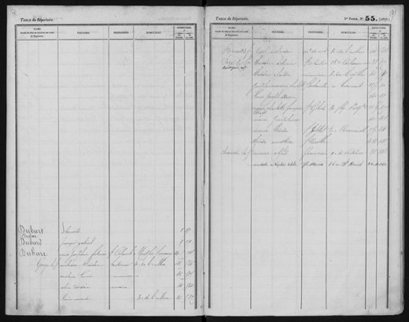
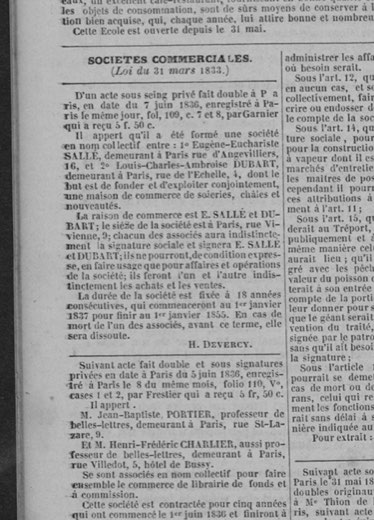

Sosa 8 · Côté Dubart
Louis Charles Ambroise Dubart
Né en 1804 à Le QuesnelMort en 1871 à Paris
Arrière-grand-père de René, côté paternel. E. Sallé et Dubart, soieries, châles et nouveautés.
Récit
Louis Charles Ambroise Dubart naît au Quesnel (Somme) le 25 brumaire an XIII, soit le 16 novembre 1804, à huit heures du soir. Son père, Jean Alexandre, alors cuisinier, le déclare le lendemain ; sa mère, Marie Josephine Sallart, est couturière. L'acte est signé « Le Fort, maire » et deux Le Fort sont témoins ; l'acte ne dit pas quels liens ils ont entre eux. Il est le dernier de cinq enfants connus : avant lui naissent au Quesnel trois sœurs, Charlotte Alexandrine, Colombe et Thaïs, et un frère, Charles Alexandre Éloi, en 1799 ; de ce frère, on ne sait rien après sa naissance. Sa mère meurt en 1812, son père en 1821, concierge au château du Quesnel. De 1812 à 1827, aucun document connu ne parle de lui : on ne sait ni qui l'a élevé, ni quand il part pour Paris. La vue historique propose des hypothèses (chez sa sœur aînée Charlotte Alexandrine, ou à Paris par ses sœurs), sans pouvoir les établir.
En octobre 1828, à Paris, il est « commis marchand », demeure 16 rue Vivienne et est témoin au mariage de sa sœur Thaïs avec le docteur Camille Melchior Gibert ; il y est dit « ami des époux ». On ignore son employeur, la maison de soieries « Au Page » restant une hypothèse non résolue. Il épouse Marie Octavie Gibert, sœur du docteur. On ne trouve ni la date ni le lieu de ce mariage : il n'est pas dans le fichier des mariages parisiens reconstitué (fichier non exhaustif), et leur contrat n'apparaît pas dans l'index des contrats de commerçants d'avril 1829 à juillet 1830. Leurs fils sont Charles, né en 1829, et Edmond, né en 1836, baptisé à Saint-Germain-l'Auxerrois alors que la famille demeure rue de l'Échelle. Le 7 juin 1836, il fonde avec son beau-frère Euchariste Eugène Sallé la société « E. Sallé et Dubart », soieries, châles et nouveautés, 9 rue Vivienne. En 1837, des châles contrefaits sont saisis chez eux, et un jugement par défaut les condamne en 1838. En 1837, l'Agenda musical range parmi les dames professeurs une « Dubart, piano, rue Vivienne, 9 », à l'adresse même de la maison : l'inférence en fait très probablement l'épouse de Louis, sans que rien ne le prouve. Le Bottin de 1839 les marque « éligibles », ce qui suggère, sans le prouver, un impôt direct d'au moins 500 francs. La société est dissoute d'un commun accord le 30 septembre 1843 ; Sallé continue seul, et les raisons de la séparation ne sont pas dites. Quelques mois plus tôt, en mars 1843, les deux associés avaient contesté ensemble leur contribution mobilière, impôt qui frappe le logement d'habitation : un indice faible qu'ils logeaient eux-mêmes rue Vivienne, ce que l'acte de 1843 (« 9 rue Vivienne ») ne contredit pas.
Pendant dix-sept ans on ne sait pas ce qu'il fait ; son domicile de 1844 à 1859 reste introuvable, ni dans les neuf volumes de listes électorales parisiennes mis en ligne, ni dans le Bottin de 1862. La maison du 9 rue Vivienne, elle, survit : le Bottin de 1862 l'inscrit sous la raison « Bernard-Sallé et Cie », le nom Dubart, présent dans « Sallé-Dubart » de 1845 à 1854 au moins, ayant disparu entre-temps. un sondage de vingt numéros de la Gazette des tribunaux (octobre 1843-janvier 1845) n'y trouve ni séparation de biens ni autre mention Dubart. En 1860 il est « employé » et habite 35 rue Bleue (Paris 9e). Aucun immeuble parisien n'apparaît à son nom. Le 26 juillet 1860, il consent au mariage de son fils Charles ; Octavie, domiciliée avec lui, avait donné son consentement le 14 juillet devant Me Achille Descours, en brevet, sans qu'une profession lui soit portée. Elle meurt le 9 août ; la table des décès de l'Enregistrement la note « femme Dubart, mari employé ». En 1866 puis en 1868, Louis demeure au 104 faubourg Poissonnière, chez le docteur Gibert, puis sa veuve Thaïs, avec son fils Edmond. Il y est employé de commerce et veuf.
Il meurt le 12 octobre 1871, à 66 ans, vers onze heures du soir, dans le quartier Rochechouart ; son corps est transporté quai de l'Archevêché, adresse que l'on pense être celle de la Morgue, sans que ce soit établi. On ne sait pas comment il est mort. L'acte le fait naître au Plessier-Rozainvillers, ce que son acte de naissance contredit. Le 6 décembre 1871, il est inhumé à Montmartre dans la concession perpétuelle n° 542, où Octavie a été transférée la veille. Restent à chercher les registres de la Morgue, son mariage avec Octavie, l'origine du capital de 1836 et ses occupations de 1843 à 1860.
Récit complet : dossier/louis-vue-historique.md
Récit rédigé le 13 novembre 2026 à partir de la base, qui fait foi. Chaque marque ouvre la preuve du passage.
Famille
Frères et sœurs
Autres liens dits par les actes
- Camille Melchior GIBERT — beau-frère
Sa vie dans le temps
- Premier Empire
- Louis Charles Ambroise Dubart est né au Quesnel le 25 brumaire an XIII (16/11/1804) à 8 h du soir, déclaré le 26 par son père — Le Quesnel vérifié
- Louis Charles Ambroise Dubart est fils de Jean Alexandre Dubart et de Marie Josephine Salart, son épouse — Le Quesnel vérifié
- Restauration
- Louis Dubart est en 1828 commis de la maison de soieries établie au 16 rue Vivienne (Richer et Cie, ancienne maison Nourtier, enseigne « Au Page ») — Paris non résolu
- Domicile : 16 rue Vivienne à Paris — selon l'arbre transmis non vérifié
- Le 4 octobre 1828, Louis Charles Ambroise Dubart, 24 ans, commis marchand, demeurant rue Vivienne n° 16, est témoin au mariage de sa sœur Thaïs (« ami des époux ») — Paris vérifié
- Charles Dubart naît à Paris (ancien 5e) le 24 juin 1829, fils de Louis Charles Ambroise Dubart et de Marie Octavie Gibert, son épouse ; l'acte rétabli en 1872 ne dit rien d'autre — Paris partiellement vérifié
- Monarchie de Juillet
- Domicile : 4 rue de l'Echelle à Paris 75001 — selon l'arbre transmis non vérifié
- Edmond Dubart, né le 17 mai 1836, est baptisé le 2 juin 1836 à Saint-Germain-l'Auxerrois ; ses parents Louis Charles Ambroise Dubart et Marie Octavie Gibert demeurent 4 rue de l'Échelle ; parrain : son oncle Camille Melchior Gibert (rue du Sentier 18) ; marraine : sa tante Marie Charlotte Françoise Thaïs Dubart, épouse du parrain — Paris vérifié
- Louis Charles Ambroise Dubart et Eugène Euchariste Sallé forment par acte sous seing privé du 7 juin 1836 une société en nom collectif « E. Sallé et Dubart » pour une maison de commerce de soieries, châles et nouveautés, siège 9 rue Vivienne à Paris, pour 18 ans du 1er janvier 1837 au 1er janvier 1855 — Paris vérifié
- En juin 1836, Louis Charles Ambroise Dubart demeure 4 rue de l'Échelle à Paris — Paris vérifié
- Événement : ouverture d'un commerce avec son beau-frère, Euchariste SALLE, au 9 rue Vivienne, en soieries, châles et nouveautés. (Paris) — selon l'arbre transmis — Paris non vérifié
- Le 11 avril 1837, des châles-cachemires contrefaits sur les dessins déposés de Deneirouse et Cie sont saisis chez Sallé et Dubart ; par jugement du 8 janvier 1838, le Tribunal de commerce de la Seine, adjugeant le profit d'un défaut, leur interdit d'en vendre et les condamne par corps à 500 F de dommages-intérêts, à la vente des châles saisis à leurs frais, à l'insertion du jugement et aux dépens ; les fabricants lyonnais Boyriven et Gelot doivent les garantir — Paris vérifié
- L'Almanach-Bottin de 1839 marque Sallé et Dubart, marchands de soieries rue Vivienne 9, chacun comme « éligible » — Paris vérifié
- Être « éligible » en 1839 signifie que Louis Dubart payait au moins 500 F de contributions directes (patente comprise) : il appartient alors à la petite minorité censitaire de la monarchie de Juillet — Paris non vérifié
- Indice d'un logement des associés au 9 rue Vivienne avant 1843 : Sallé et Dubart contestent ensemble, avec le droit proportionnel de patente, leur contribution mobilière (impôt qui frappe le logement d'habitation), par un arrêté du 13 mars 1843 porté au Conseil d'État — Paris non vérifié
- La société Sallé et Dubart est dissoute d'un commun accord par acte sous seing privé du 30 septembre 1843, à compter du 1er octobre 1843 ; la liquidation est déjà « consommée entre les associés », Sallé est liquidateur à l'égard des tiers et continue seul le commerce — Paris vérifié
- En septembre 1843, Louis Charles Ambroise Dubart est dit négociant, demeurant 9 rue Vivienne — Paris vérifié
- Événement : Dissolution d'un commun accord du commerce "SALLE et DUBART" situé au 9 rue Vivienne, soieries, châles et nouveautés. le commerce avait été créé le 7 juin 1836. (Paris) — selon l'arbre transmis — Paris non vérifié
- Sallé et Dubart contestent devant le conseil de préfecture de la Seine leurs contributions (mobilière et droit proportionnel de patente) ; ils se pourvoient au Conseil d'État contre un arrêté du 13 mars 1843, puis se désistent ; Sallé seul poursuit pour l'exercice 1843 ; ordonnance du 1er mai 1846 — Paris vérifié
- Second Empire
- Domicile : 35 rue Bleue (anciennement rue de l'Enfer) Paris 9ème — selon l'arbre transmis non vérifié
- Le 14/07/1860, Marie Octavie Gibert, épouse de Louis Charles Ambroise [Dubart], demeurant à Paris rue Bleue n° 35, donne devant Me Achille Descours (étude CXI) son consentement au mariage de son fils Charles ; acte n° 604 du répertoire, en brevet, enregistré le 16 juillet (droits 2,20 F) — Paris vérifié
- En juillet-août 1860, Louis Charles Ambroise Dubart est « employé », domicilié 35 rue Bleue (9e) — Paris vérifié
- Charles Dubart, employé, né à Paris (ancien 5e) le 24/06/1829, fils de Louis Charles Ambroise Dubart et de Marie Octavie Gibert, épouse le 26/07/1860 à Paris 9e Mathilde Émilie Tissot (née 14/11/1831, Paris ancien 3e, fille de feu André Tissot et feue Héloïse Adélaïde Hamard), sans contrat de mariage ; le père présent et consentant, la mère ayant consenti par acte notarié du 14/07/1860 — Paris vérifié
- Marie Octavie Gibert, épouse de Louis Charles Ambroise Dubart, meurt le 9 août 1860 à midi et demi au domicile conjugal, 35 rue Bleue (Paris 9e), âgée de 52 ans, née à Paris — Paris vérifié
- En 1860, la table des décès de l'Enregistrement inscrit Octavie sans profession propre : « Gibert, Marie Octavie, f[emm]e Dubart, mari employé, 35 [rue] Bleue, 52 ans, [décédée le] 9 août [1860], mariée » — Paris vérifié
- En juillet 1866, Edmond Dubart, fils de Louis, 30 ans, employé, demeure 104 rue du Faubourg-Poissonnière, adresse du domicile conjugal de son oncle Camille Melchior Gibert (époux de sa tante Thaïs Dubart) — Paris vérifié
- Le 9 juillet 1868, à la mairie du 9e, Edmond Dubart, employé, 32 ans, né Paris 1er le 17/05/1836, demeurant 104 rue du Faubourg-Poissonnière avec son père, épouse Marie Félicie Rignault, 21 ans, née Paris 3e en janvier 1847, demeurant rue Pigalle 34 avec son père Jean Louis Alexandre Rignault, artiste musicien (mère Adèle Félicie Bosse, décédée) ; contrat devant Me Huillier (lecture corrigée le 03/11/2026, A0548) le 7/07/1868 ; témoins : Joseph Éléonor Pressat [?], docteur en médecine ; Pierre Valton, ancien avocat au Conseil d'État ; Philippe Hébert, agent de change ; Pierre Hubert Cary, négociant — Paris vérifié
- En juillet 1868, Louis Charles Ambroise Dubart, employé de commerce, veuf, demeure 104 rue du Faubourg-Poissonnière avec son fils Edmond ; il assiste au mariage de celui-ci, consent et signe « L. Dubart » — Paris vérifié
- Domicile : 104 rue du Faubourg Poissonnière à Paris — selon l'arbre transmis — Paris non vérifié
- Troisième République
- Louis Charles Ambroise Dubart, 66 ans, employé de commerce, veuf de Marie Octavie Gibert, domicilié 104 rue du Faubourg-Poissonnière, meurt le 12 octobre 1871 vers 11 heures du soir dans le quartier Rochechouart (9e) ; son corps est transporté quai de l'Archevêché n° 2 et le décès enregistré dans le 4e le 14 octobre sur la déclaration de ses fils Charles (42 ans, employé de banque, Levallois-Perret) et Edmond (35 ans, employé de banque, 19 rue Beudant) — Paris vérifié
- Le quai de l'Archevêché n° 2 étant l'adresse de la Morgue de Paris en 1871, le corps de Louis a été porté à la Morgue : il est mort hors de son domicile (voie publique, lieu public ou chez un tiers) ou a dû être identifié — Paris non résolu
- L'acte de décès de 1871 fait naître Louis au Plessier-Rozainvillers (Somme), ce que contredit son acte de naissance du Quesnel (A0160) — Paris contredit
- Louis Charles Ambroise Dubart, 66 ans, est déposé le 15 octobre 1871 au caveau dépositoire (case 9) du cimetière du Père-Lachaise ; il en est exhumé et transporté au cimetière du Nord (Montmartre) le 6 décembre 1871 ; la concession de 2 m [?] demandée au Père-Lachaise est annulée par arrêté du 20 avril 1872 — Paris vérifié
- Le 6 décembre 1871, Louis Charles Ambroise (« Ambroise ») Dubart est inhumé au cimetière de Montmartre dans la concession perpétuelle n° 542 (1871), 9e division, où sa femme Marie Octavie Gibert, exhumée de sa sépulture du 11 août 1860 dans le même cimetière, a été placée la veille (5 décembre 1871) — Paris vérifié
- Charles DUBART est le fils de Louis Charles Ambroise DUBART et de Marie Octavie GIBERT (décédés en 1890). — Paris vérifié
- Edmond DUBART est le fils de Charles Ambroise DUBART (sans « Louis » dans l'acte) et de Marie Octavie GIBERT, décédés. — Paris vérifié
Lieux
- Paris 31 mentions
- Le Quesnel 3 mentions
Documents (36)







Autres sources citées
- Agenda musical pour l'année 1837 (« contenant les noms et demeures » des artistes), rubrique « DAMES PROFESSEURS. Piano, Harpe, Guitare, Solfège, Chant, Harmonie », p. 195 imprimée Annuaire, almanach · BnF, Gallica
- Almanach-Bottin et Didot-Bottin du commerce de Paris, 1846-1864 : entrées « Gibert, médecin de l'hôpital Saint-Louis » (recherche plein texte OCR, Gallica) Annuaire, almanach · BnF, Gallica · cb32698036g ; cb32695639f
- Annuaire-almanach du commerce (Didot-Bottin), 1862, Paris : listes alphabétique, par professions et par rues (Vivienne, Colbert) Annuaire, almanach · Internet Archive (exemplaire Univ. de Toronto) · 1862bottin01pariuoft
- Le Quesnel, tables décennales an XI-1812 (naissances, décès) Acte d'état civil · AD Somme · 5MI_D49
- Wikipédia, « Louis-Alexandre Blin de Bourdon » Site web · Wikipédia
- F.-I. Darsy, Les doléances du peuple et les victimes : souvenirs de la Révolution en Picardie, 1887 Livre, ouvrage · BnF Gallica
- Dossier ChatGPT sur Louis Charles Ambroise Dubart, transmis par Jessica Synthèse de travail (piste, pas une preuve) · Jessica (copie)
- Recueil des arrêts du Conseil, ou ordonnances royales rendues en Conseil d'État, année 1846, p. 268 : ordonnance du 1er mai 1846, Sallé et Dubart (n° 18,467-18,472) Livre, ouvrage · BnF, Gallica
- Almanach-Bottin du commerce de Paris, 1839, liste alphabétique, p. 349 Annuaire, almanach · BnF, Gallica
- Décès de Charles DUBART, Paris 17e arr., 26/06/1890 (acte dressé le 27/06/1890) Acte d'état civil · Archives de Paris · V4E 7490
- Décès d'Edmond DUBART, Paris 14e arr., 10/05/1903 (acte dressé le 12/05/1903) Acte d'état civil · Archives de Paris · 14D 202
- Transcription au 9e arr. (26/06/1903) de l'acte de décès d'Edmond DUBART Acte d'état civil · Archives de Paris · 9D 97
- Listes électorales de Paris, AD75 série VD6, volumes indexés sur Geneanet (VD6/84, 85, 196, 275, 629 ; 1828, 1830-1831, 1846-1847, 1857-1863) Dossier administratif · Geneanet (images et index collaboratif) · VD6/84, VD6/85, VD6/196, VD6/275, VD6/629
- Gazette des tribunaux, échantillon de 20 numéros (6/10/1843-26/01/1844, 10/01/1845), couche texte des PDF Presse · ENAP
Ce qu'on ignore
Louis Dubart est en 1828 commis de la maison de soieries établie au 16 rue Vivienne (Richer et Cie, ancienne maison Nourtier, enseigne « Au Page »)
non résolu l'immeuble abrite aussi tailleurs, modistes, joailliers et une mercerie (Bottin) ; aucun document ne nomme son employeur · A0233
Le quai de l'Archevêché n° 2 étant l'adresse de la Morgue de Paris en 1871, le corps de Louis a été porté à la Morgue : il est mort hors de son domicile (voie publique, lieu public ou chez un tiers) ou a dû être identifié
non résolu adresse de la Morgue à sourcer ; les registres de la Morgue (Archives de la Préfecture de police) donneraient les circonstances · A0241
L'acte de décès de 1871 fait naître Louis au Plessier-Rozainvillers (Somme), ce que contredit son acte de naissance du Quesnel (A0160)
contredit le Plessier est le village de Durson, beau-frère de Louis : confusion familiale probable · A0242
Dans la table des hypothèques (reliée vers 1875), Camille Melchior Gibert est domicilié 104 faubourg Poissonnière, l'adresse où Louis Dubart, son beau-frère, est domicilié en 1869-1871 et à sa mort : Louis a probablement vécu ses dernières années dans l'immeuble de sa sœur et de son beau-frère
non résolu date de l'adresse de Gibert dans la table inconnue (ajout possible entre 1856 et 1875) ; rien ne dit que le 104 soit l'immeuble acquis en 1856 ; même adresse peut être une simple cohabitation de locataires · A0250
Le contrat de mariage de Louis Dubart et d'Octavie Gibert n'apparaît pas dans l'index nominatif (entrées 1-1199, avril 1829-juillet 1830) du registre des contrats de mariage de commerçants (MC/CM/1)
recherche infructueuse · A0550
Aucun Dubart ni Sallé de la famille dans l'index des neuf volumes de listes électorales parisiennes (VD6) mis en ligne sur Geneanet (1828, 1830-1831, 1846-1847, 1857-1863), ni dans le Didot-Bottin de 1862
recherche infructueuse ne prouve pas que Louis n'était pas électeur ; arrondissements des volumes non établis · A0806
Textile picard / soierie et lien avec le fils négociant
infructueuse · 2026-10-29 — aucun lien documenté Pistes : contrat de mariage, tables de l'enregistrement, Archives de Paris · R0044
Louis Charles Ambroise Dubart figure-t-il dans l'Almanach du commerce avant la société (1822-1836) ?
infructueuse · 2026-10-30 — Aucune entrée à son nom avant 1837 (OCR) ; en 1837 seulement « Sallé et Dubart, nouveautés et soieries, Vivienne ». Il n'était donc pas marchand patenté à son compte avant 1836, ce qui s'accorde avec la qualité d'« employé de commerce » donnée par l'arbre (non sourcée). Relevé au passage : « Obry-Dubart (Mad.), couturière », rue du Roule (1827) puis rue des Fossés-Saint-Germain-l'Auxerrois, 6 (1832-1835) : identité inconnue, peut-être une parente (homonymie très possible) Pistes : Contrôler visuellement les volumes 1829-1836 (lacunes : 1824, 1826, 1828, 1830, 1831, 1834, 1836 absents de Gallica) ; identifier Mme Obry-Dubart · R0072
Louis Charles Ambroise Dubart figure-t-il dans l'Almanach-Bottin après la dissolution de 1843 ?
infructueuse · 2026-10-30 — 1838 : « Dubart, march. d'étoffes de soie, Vivienne, 9 » (liste alphabétique) et « Sallé et Dubart, él., march. de châles et d'étoffes de soie, Vivienne, 9 ». À partir de 1845 la maison apparaît sous « Sallé-Dubart », soieries, Vivienne 9 (et Colbert 1 à partir de 1850), jusqu'en 1854 au moins : c'est la maison continuée par Sallé seul (forme « nom du mari-nom de la femme » probable, Sallé ayant épousé une Dubart : interprétation). Aucune entrée propre à Louis de 1844 à 1871 (les Dubart relevés sont un pharmacien rue de Vendôme, un tourneur-marbrier ruelle Pelée, etc.). Après 1843, il n'apparaît plus comme commerçant patenté à Paris Pistes : Professions données par les actes (décès d'Octavie 1860, mariage de Charles Alfred 1860, mariage d'Edmond, décès de Louis 1871) aux Archives de Paris (fermées le 30/10/2026) ; recensements ; successions · R0073
Où trouver ce que fait Louis entre 1812 et 1828 (orphelin à 8 puis 16 ans, départ pour Paris) ?
partiel · 2026-10-30 — Il n'apparaît dans aucun acte du Quesnel déjà lu : le décès de son père (1821) est déclaré par le gendre Durson et un ami, sans mention du fils de 16 ans. Rien d'autre en ligne à ce stade Pistes : Tutelle (conseil de famille devant le juge de paix du canton de Moreuil, après 1812 : AD Somme, série U) ; conscription, classe 1824 (tableaux de recensement et listes de tirage du canton de Moreuil, série R, ou listes de la Seine s'il est déjà à Paris) : donneraient profession et domicile à 20 ans ; actes de mariage parisiens de ses sœurs (1827, 1828) et le sien (vers 1828), dont témoins et domiciles ; « L'Indicateur des mariages » (Gallica, cb32790511r) si la collection couvre 1827-1828 · R0074
Quel commerce occupait le 16 rue Vivienne, domicile de Louis en 1828 (arbre) ?
partiel · 2026-10-30 — Immeuble à nombreuses boutiques (joailliers, tailleurs, modes, libraires, mercerie) ; une entrée « Vivienne, 16, et à Lyon » figure dans la rubrique des soieries en 1827 (p. 210, vue 529) et en 1832 (vue 616) : nom de la maison non lu (images Gallica en erreur serveur, texte brut bloqué) Pistes : Lire les vues 529 (bpt6k6292888w) et 616 (bpt6k995078t) ; vérifier d'abord le domicile de 1828 sur un acte (l'arbre ne donne pas sa source) · R0076
La presse numérisée (Gallica, recherche d'expression exacte) mentionne-t-elle la dissolution de Richer et Auzouy, la reprise par Hamard et Guérin, ou d'autres affaires de Sallé et Dubart ?
partiel · 2026-10-30 — Richer et Auzouy, « négociants en étoffes de soie », n'apparaissent hors annuaires que dans des listes publiées par le Journal des débats et le Moniteur (17/04/1831, 15/04/1832 ; nature de la liste non lue). Aucune annonce de dissolution ni de reprise trouvée (la Gazette des tribunaux d'avant 1887 n'est pas sur Gallica). Sallé et Dubart : le jugement Deneirouse repris par *Le Commerce* (5/04/1838), la dissolution par *Le Moniteur industriel* (5/10/1843), et un litige fiscal jugé au Conseil d'État le 1/05/1846 (AG08) Pistes : Gazette des tribunaux (ENAP) 1833-1836 pour les annonces de sociétés Richer et Auzouy / Auzouy / Hamard et Guérin, une fois la date approchée (Bottin : Auzouy seul en 1835, Hamard et Guérin en 1837) ; registres du tribunal de commerce (D31U3, Archives de Paris) · R0079
Les listes électorales imprimées de la Seine (1831-1848) sont-elles sur Gallica ?
infructueuse · 2026-10-30 — Aucune notice trouvée sous ces titres Pistes : Listes électorales et du jury de la Seine (Archives de Paris, série D1M ou VD : à vérifier ; BnF imprimés) : donneraient âge, adresse et montant du cens de Louis et de Sallé · R0080
Existe-t-il des factures ou des publicités de Sallé et Dubart, ou de la maison « Au Page », dans les collections et la presse en ligne ?
partiel · 2026-10-30 — Aucune facture de Sallé et Dubart. Une facture « Au Page » (Hamard et Guérin) du 3/02/1843, vendue à Mme Victor Hugo pour le trousseau de Léopoldine : contexte de la maison du 16 rue Vivienne, sans lien prouvé avec Louis. Après 1843, la maison Sallé-Dubart ouvre une succursale à Boulogne (1849) ; Sallé porte le nom d'usage « Salle-Dubart » (1851) Pistes : Delcampe, Drouot, bibliothèque Forney (factures et cartes commerciales) ; image haute définition de la facture Hugo (demande au musée) · R0081
Le mariage de Louis Charles Ambroise Dubart et Marie Octavie Gibert (vers 1828) est-il dans l'état civil reconstitué ?
infructueuse · 2026-10-30 — Aucune fiche « Dubart Louis Charles Ambroise » dans le fichier des mariages (liasse V3E/M 326, fiches 29-46 lues) : l'acte n'a pas été reconstitué, ou la fiche est classée ailleurs Pistes : Fichier des mariages au nom Gibert (épouse) ; acte de naissance de Charles Alfred (1829), fichier des naissances ; contrat de mariage (Minutier central) · R0082
La presse d'octobre 1871 rapporte-t-elle les circonstances de la mort de Louis Dubart (12/10/1871, quartier Rochechouart, corps porté quai de l'Archevêché) ?
infructueuse · 2026-10-30 — Seules les listes ordinaires de décès le mentionnent ; aucun fait divers identifiable ne le concerne (un fait divers anonyme n'est pas exclu : OCR imparfait, journaux non tous numérisés) Pistes : Registre de la Morgue et procès-verbaux du commissariat du quartier Rochechouart (archives de la Préfecture de police) : lettre préparée (courrier-prefecture-police-morgue-1871.md) · R0084
Le mariage de Louis Dubart et Marie Octavie Gibert a-t-il une fiche au nom de l'épouse dans le fichier des mariages de l'état civil reconstitué ?
infructueuse · 2026-10-30 — Aucune fiche Octavie Gibert ni Gibert × Dubart : liasse V3E/M 431 « Gibert (1752) – Gibert (1835) », fiches 16-50 lues (1818-1835 ; seule la fiche 34, Camille Melchior × Marie Françoise Thaïs Dubart, 1828, concerne la famille) ; ni sous la graphie Gilbert : liasse V3E/M 432 « Gilbert (1821) – Gilbert (1831) », 51 fiches lues. Avec R0082 (rien au nom Dubart), le mariage n'a pas été reconstitué, ou il a été célébré hors de Paris Pistes : Acte de naissance de Charles Alfred (24/06/1829, fichier des naissances) ; publications de mariage ; contrat de mariage (Minutier central, tables) ; mariage hors Paris (commune de banlieue, Somme) · R0085
Octavie Gibert (†1860) et Louis Dubart (†1871) ont-ils une fiche dans le fichier des successions déclarées 1858-1899 ?
partiel · 2026-10-30 — Ni Octavie (liasse DQ7 12885 « Gibaud – Giblet », 1858-1870, fiches Gibert 12-44 lues ; ni à Dubart, liasse DQ7 12877, 1858-1870) ni Louis (liasse DQ7 12960, 1870-1884) : le fichier n'est pas exhaustif. Trouvé au passage : la succession de sa sœur Colombe, veuve Sallé, morte le 20/05/1883 (A0244) ; aussi « Dubart Camille, femme Porrusson [?] », 70 rue Nollet, †20/10/1874 (6e bureau, 14/12/1874 n° 1639), lien inconnu Pistes : Tables des décès et successions (DQ8) par bureau : 1829 (Marin François Gibert), 1860, 1871 (en cours) ; déclaration de Colombe 1883 (8e bureau, n° 1431) en salle de lecture : héritiers, peut-être neveux Dubart · R0086
La succession de Marin François Gibert (†1829) nomme-t-elle ses enfants, dont Octavie « épouse Dubart » (date et lieu du mariage, contrat) ?
infructueuse · 2026-10-30 — Décès trouvé (DQ8 853, vue 47, ligne 24) mais aucune succession déclarée : pas d'héritiers nommés, la piste ne renseigne pas sur le mariage de Louis et Octavie Pistes : Succession d'Octavie (1860) ; mariage religieux (paroisse) ; contrat de mariage · R0087
Louis Dubart a-t-il possédé, acheté, vendu ou hypothéqué un immeuble à Paris (piste « éligible » 1839) ?
infructueuse · 2026-10-30 — Aucune entrée à son nom dans la table des formalités hypothécaires (1re conservation, nom Dubart) : son « éligibilité » de 1839 ne repose donc probablement pas sur un immeuble parisien, mais sur la patente et la mobilière (inférence, cf. A0222). Trouvé au passage : une formalité pour sa sœur Thaïs, femme Gibert (A0248), et un Vincent Alfred Dubart, pharmacien rue de Vendôme, avec mention « Chauvet sa femme [?] » (un J. P. B. Chauvet, négociant, est témoin du mariage Gibert × Dubart en 1828 : lien non établi) Pistes : Répertoire des formalités vol. 23 case 177 (Thaïs) ; listes électorales VD6 1837-1843 (montant du cens) ; texte de la loi du 19 avril 1831 à lire · R0088
Que disent les actes de naissance reconstitués de Charles (1829) et d'Edmond (1836) sur Louis ?
partiel · 2026-10-30 — Charles : acte rétabli d'après le mariage de 1860, sans aucun détail sur Louis. Edmond : extrait de baptême de Saint-Germain-l'Auxerrois (2/06/1836) : domicile 4 rue de l'Échelle (conforme à juin 1836), parrain et marraine Gibert × Dubart. Les registres paroissiaux de Saint-Germain-l'Auxerrois existaient en 1868 : piste pour le mariage religieux de Louis et Octavie (paroisse de l'épouse vers 1828) aux Archives historiques du diocèse de Paris Pistes : Mariage religieux Louis × Octavie (registres paroissiaux parisiens, archives diocésaines, non en ligne) ; autres enfants (tables de décès d'enfants) · R0093
Quand les Gibert s'installent-ils au 104 faubourg Poissonnière, et qui est le notaire du consentement d'Octavie (1860) ?
partiel · 2026-10-30 — Bottin (OCR) : Gibert au 30 faubourg Poissonnière 1852-1856, au 104 dès 1858 : installation juste après l'acquisition de mai 1856 (A0260, A0261). Notaire de 1860 : « Me Descours » (relecture probable), non retrouvé dans le Bottin par OCR Pistes : Salle des inventaires virtuelle (Archives nationales) : étude de Me Descours (1860) et de Me Mouillin [?] (contrat d'Edmond, 7/07/1868) ; registre des transcriptions hypothécaires vol. 2184 art. 10 (salle de lecture) · R0096
Louis Dubart (ou ses fils) figure-t-il au fichier des électeurs de Paris 1860-1870 ?
infructueuse · 2026-10-30 — Aucune fiche Dubart dans le fichier des électeurs de Paris 1860-1870 (Archives de Paris, D4M2 3, liasse « Dietrich – Dubois Dubey », vues 66-99 : Dru… puis Dubarle, Dubaux, Dubeau, Dubert). Le fichier ne semble pas exhaustif. Par ailleurs, les calepins du cadastre (D1P4) sont retirés de la consultation (amiante) et non numérisés Pistes : Listes électorales de 1831-1848 en salle de lecture (piste « éligible ») ; listes électorales annuelles 1860-1871 en salle · R0097
Article de presse de 1843 (dissolution Sallé et Dubart) conservé par la famille
partiel · 2026-11-02 — L'image est une vignette sans titre ni date de parution ; son contenu (avis du 30/09/1843, société Sallé et Dubart de 1836, rue Vivienne 2) reproduit ce que S0129 (Gazette des tribunaux du 3/10/1843) donne déjà. Copie probable de S0129, pas une nouvelle source indépendante ; aucune source nouvelle créée. Pistes : Aucune ; confirmer éventuellement le titre du journal en retrouvant l'avis. · R0115
Contrat de mariage de Louis Dubart et Octavie Gibert
infructueuse · 2026-11-03 — absent de l'index MC/CM/1 (1-1199) Pistes : tables de l'enregistrement des actes civils publics (Archives de Paris) ; MC/CM/1 entrées 1200 et suivantes · R0188
Adresse de Louis Dubart 1839-1847 (listes électorales ou du jury)
archives inaccessibles · 2026-11-03 — aucune liste de la monarchie de Juillet sur Internet Archive ; HathiTrust et Google Books bloqués Pistes : Gallica (accès humain) ; Bottin 1843-1844 rue Chabannais · R0190
Dubart parisiens dans les inventaires du Minutier central (homonymes à éliminer)
partiel · 2026-11-03 — Antoine Dubart, négociant, rue Saint-Honoré 320, dont la veuve Marie Victoire Drouet meurt le 18/02/1822 (inventaire, étude LXXXII) ; Benoit Auguste Dubart, mort le 14/07/1832 (étude LXXXII) ; Charlotte Gabrielle Dubart, épouse de Claude Gaillardin, rue de l'Université 60 (étude LXVII, Ducorps, avant 1830) ; une « veuve Dubart » (étude XLV, Outrebon) : aucun lien établi avec Louis Pistes : ouvrir ces inventaires pour y chercher un frère ou un neveu de Louis ; lien éventuel entre la Dubart cliente de Ducorps et le 1 rue Chabannais (A0553) · R0194
Contrat de mariage d'Edmond Dubart et Marie Félicie Rignault (7 juillet 1868) : trouvé dans les inventaires des notaires de Paris, avec profession et domicile des parents (recherche par nom du client Dubart)
infructueuse · 2026-11-09 — Aucun contrat au nom de Dubart dans les inventaires indexés entre 1860 et 1871. Le contrat du 7/07/1868 n'est pas retrouvé par ce moyen ; une absence dans l'index ne prouve pas l'absence de l'acte. Pistes : Refaire la recherche avec le nom du notaire (Huillier, puis Mouillin) sans nom de client ; contrat par le nom de l'épouse (Rignault) ; Gazette des tribunaux pour l'extrait de société 1836 (Sallé et Dubart) · R0261
Profession de Louis Dubart (métier réel, patente, rôle dans la maison Sallé et Dubart) : Gazette des tribunaux (ENAP) 1836-1843, autres journaux d'annonces légales, rôles de patentes de la Seine, agent de change Philippe Hébert
partiel · 2026-11-09 — Aucune information nouvelle sur la profession de Louis : la Gazette confirme ce qui est déjà en base (A0213, A0217, A0218, A0220). Non trouvé : patente déclarée à titre personnel, rôle effectif dans la maison, autres annonces de 1837 ou 1843 (non exhaustif : pas de balayage numéro par numéro). Journaux d'annonces légales inaccessibles (Gallica). Rôles de patentes non localisés. Philippe Hébert : aucune mention d'annuaire trouvée ; signature « Hébert » à l'acte de 1860 (non identifiée). Pistes : Balayage manuel des numéros de la Gazette des tribunaux du 1er au 31 octobre 1843 et de juin 1837 (PDF ENAP accessibles par URL) ; Gallica depuis le navigateur de Jessica (Journal de commerce, Moniteur, Journal des débats) ; Archives de Paris : état des fonds contributions directes/patentes avant 1871 ; annuaire 1865-1871 de la Chambre des agents de change · R0262
Le 9 rue Vivienne est-il le domicile du ménage Dubart-Gibert en 1837, ou seulement la boutique ?
partiel · 2026-11-13 — Domicile rue de l'Échelle 4 en juin 1836 (A0214) ; domicile déclaré 9 rue Vivienne en septembre 1843 (A0218) ; les annuaires 1837-1839 ne donnent que l'adresse commerciale ; date du déménagement inconnue Pistes : Listes électorales et du jury de Paris, Archives de Paris série VD6 (ex. VD6/275 : ex-4e arr., 1831 ; VD6/196 : ex-3e arr., 1846) : originaux en salle de lecture seulement ; certaines listes indexées ou mises en images sur Geneanet (registres/view/42528, 42640, 42713 : à vérifier) ; recherche web du 13/11/2026, résumés non comptés comme consultation. Aussi : actes de 1837-1842 où Louis ou Octavie déclarent un domicile · R0301
Que devient la maison Sallé-Dubart après 1843, et Louis y est-il employé ?
partiel · 2026-11-13 — En 1862 la maison est « Bernard-Sallé et Cie » (A0805) ; aucune pièce ne nomme Louis comme employé ; Internet Archive, Google Books (quota), Wikipast (refus), Gazette des tribunaux (pas d'index) sans résultat Pistes : Gallica : Bottin 1855-1861 (date du changement de raison), Gazette des tribunaux et Petites Affiches « Sociétés » 1854-1862, Boulogne Gazette 1849-1853 · R0303
Domicile de Louis Dubart entre fin 1843 et 1859 (listes électorales, Bottin)
infructueuse · 2026-11-13 — Rien dans les volumes VD6 indexés sur Geneanet ni dans le Bottin 1862 (A0806) Pistes : Archives de Paris, salle de lecture : VD6 1837-1848 des arrondissements de la rue Vivienne et de la rue de l'Échelle ; tirage au sort de Charles (classe 1849) et d'Edmond (classe 1856) · R0304
Continuer l'exploration
Dossier complet : toutes les informations et leurs sources
Sosa 8.
Biographie
Récit rédigé le 2026-11-13 à partir de la base, qui fait foi. Les crochets renvoient aux assertions (onglet Toutes les informations).
Louis Charles Ambroise Dubart naît au Quesnel (Somme) le 25 brumaire an XIII, soit le 16 novembre 1804, à huit heures du soir. Son père, Jean Alexandre, alors cuisinier, le déclare le lendemain ; sa mère, Marie Josephine Sallart, est couturière [A0160, A0161, A0168]. L'acte est signé « Le Fort, maire » et deux Le Fort sont témoins ; l'acte ne dit pas quels liens ils ont entre eux. Il est le dernier de cinq enfants connus : avant lui naissent au Quesnel trois sœurs, Charlotte Alexandrine, Colombe et Thaïs, et un frère, Charles Alexandre Éloi, en 1799 ; de ce frère, on ne sait rien après sa naissance [A0142]. Sa mère meurt en 1812, son père en 1821, concierge au château du Quesnel [A0154, A0157]. De 1812 à 1827, aucun document connu ne parle de lui : on ne sait ni qui l'a élevé, ni quand il part pour Paris. La vue historique propose des hypothèses (chez sa sœur aînée Charlotte Alexandrine, ou à Paris par ses sœurs), sans pouvoir les établir.
En octobre 1828, à Paris, il est « commis marchand », demeure 16 rue Vivienne et est témoin au mariage de sa sœur Thaïs avec le docteur Camille Melchior Gibert ; il y est dit « ami des époux » [A0232]. On ignore son employeur, la maison de soieries « Au Page » restant une hypothèse non résolue [A0233]. Il épouse Marie Octavie Gibert, sœur du docteur [A0237]. On ne trouve ni la date ni le lieu de ce mariage : il n'est pas dans le fichier des mariages parisiens reconstitué (fichier non exhaustif), et leur contrat n'apparaît pas dans l'index des contrats de commerçants d'avril 1829 à juillet 1830 [A0542, A0550]. Leurs fils sont Charles, né en 1829, et Edmond, né en 1836, baptisé à Saint-Germain-l'Auxerrois alors que la famille demeure rue de l'Échelle [A0256, A0257, A0214]. Le 7 juin 1836, il fonde avec son beau-frère Euchariste Eugène Sallé la société « E. Sallé et Dubart », soieries, châles et nouveautés, 9 rue Vivienne [A0213]. En 1837, des châles contrefaits sont saisis chez eux, et un jugement par défaut les condamne en 1838 [A0216]. En 1837, l'Agenda musical range parmi les dames professeurs une « Dubart, piano, rue Vivienne, 9 », à l'adresse même de la maison : l'inférence en fait très probablement l'épouse de Louis, sans que rien ne le prouve [A0797, A0798]. Le Bottin de 1839 les marque « éligibles », ce qui suggère, sans le prouver, un impôt direct d'au moins 500 francs [A0221, A0222]. La société est dissoute d'un commun accord le 30 septembre 1843 ; Sallé continue seul, et les raisons de la séparation ne sont pas dites [A0217]. Quelques mois plus tôt, en mars 1843, les deux associés avaient contesté ensemble leur contribution mobilière, impôt qui frappe le logement d'habitation : un indice faible qu'ils logeaient eux-mêmes rue Vivienne, ce que l'acte de 1843 (« 9 rue Vivienne ») ne contredit pas [A0804, A0218].
Pendant dix-sept ans on ne sait pas ce qu'il fait ; son domicile de 1844 à 1859 reste introuvable, ni dans les neuf volumes de listes électorales parisiennes mis en ligne, ni dans le Bottin de 1862 [A0806]. La maison du 9 rue Vivienne, elle, survit : le Bottin de 1862 l'inscrit sous la raison « Bernard-Sallé et Cie », le nom Dubart, présent dans « Sallé-Dubart » de 1845 à 1854 au moins, ayant disparu entre-temps [A0805]. un sondage de vingt numéros de la Gazette des tribunaux (octobre 1843-janvier 1845) n'y trouve ni séparation de biens ni autre mention Dubart [A0552]. En 1860 il est « employé » et habite 35 rue Bleue (Paris 9e) [A0238]. Aucun immeuble parisien n'apparaît à son nom [A0247]. Le 26 juillet 1860, il consent au mariage de son fils Charles ; Octavie, domiciliée avec lui, avait donné son consentement le 14 juillet devant Me Achille Descours, en brevet, sans qu'une profession lui soit portée [A0239, A0546]. Elle meurt le 9 août [A0236] ; la table des décès de l'Enregistrement la note « femme Dubart, mari employé » [A0540]. En 1866 puis en 1868, Louis demeure au 104 faubourg Poissonnière, chez le docteur Gibert, puis sa veuve Thaïs, avec son fils Edmond [A0252, A0258]. Il y est employé de commerce et veuf.
Il meurt le 12 octobre 1871, à 66 ans, vers onze heures du soir, dans le quartier Rochechouart ; son corps est transporté quai de l'Archevêché, adresse que l'on pense être celle de la Morgue, sans que ce soit établi [A0240, A0241]. On ne sait pas comment il est mort. L'acte le fait naître au Plessier-Rozainvillers, ce que son acte de naissance contredit [A0242]. Le 6 décembre 1871, il est inhumé à Montmartre dans la concession perpétuelle n° 542, où Octavie a été transférée la veille [A0253, A0254, A0255]. Restent à chercher les registres de la Morgue, son mariage avec Octavie, l'origine du capital de 1836 et ses occupations de 1843 à 1860.
Récit complet : dossier/louis-vue-historique.md
Faits clés
- Naissance : 16/11/1804, Le Quesnel, Somme — vérifié [A0160]
- Parents : Jean "Alexandre" DUBART (P9223) et Marie Josephine SALLART (P9225) — vérifié [A0160]
- Mariage : avec Marie Octavie GIBERT (P7411) — 1772 à 1841, Paris — recherche infructueuse [A0542]
- Décès : 12/10/1871, Paris 9e, quartier Rochechouart — vérifié [A0240]
- Inhumation : 15/10/1871, Paris, cimetière du Père-Lachaise — vérifié [A0253]
Versions divergentes (voir Toutes les informations) : naissance A0242 ; inhumation A0254.
Famille
Liens tirés des assertions de la base ; le statut de chaque lien est celui des assertions citées. Les proches plus éloignés sont calculés à partir de ces liens directs.
Parents
- Jean "Alexandre" DUBART (P9223) [A0160 vérifié, A0168 vérifié, AR0196 non vérifié]
- Marie Josephine SALLART (P9225) [A0160 vérifié, A0168 vérifié, AR0196 non vérifié]
Conjoint(s)
- Marie Octavie GIBERT (P7411) — mariage 1772 à 1841 [A0236 vérifié, A0540 vérifié, A0542 recherche infructueuse, A0546 vérifié, A0550 recherche infructueuse, A0552 recherche infructueuse]
Enfants
- Edmond DUBART (P5232) [A0240 vérifié, A0252 vérifié, A0257 vérifié, A0258 vérifié, A0259 vérifié, A0384 vérifié, AR0181 non vérifié]
- Charles Alfred DUBART (P5762) [A0239 vérifié, A0240 vérifié, A0256 partiellement vérifié, A0376 vérifié, AR0180 non vérifié]
Frères et sœurs
- Marie Françoise Thais DUBART (P8810) [A0160 vérifié, A0168 vérifié, A0243 vérifié, AR0195 non vérifié, AR0196 non vérifié]
- Marie Josèphe Charlotte Alexandrine DUBART (PN0009) [A0140 vérifié, A0160 vérifié, A0168 vérifié, A0195 vérifié, AR0196 non vérifié]
- Marie Charlotte Colombe DUBART (PN0010) [A0141 vérifié, A0160 vérifié, A0168 vérifié, A0169 vérifié, AR0196 non vérifié]
- Charles Alexandre Eloi DUBART (PN0011) [A0142 vérifié, A0160 vérifié, A0168 vérifié, AR0196 non vérifié]
Proches et alliés (calculés)
Grands-parents
- Jean DUBART (PR0032) — par Jean "Alexandre" DUBART (P9223) [A0160 vérifié, A0168 vérifié, A0200 vérifié, A0273 vérifié, A0277 vérifié, AR0196 non vérifié, AR0210 non vérifié]
- Marie Magdeleine LEMAIRE (PR0033) — par Jean "Alexandre" DUBART (P9223) [A0160 vérifié, A0168 vérifié, A0200 vérifié, A0273 vérifié, A0277 vérifié, AR0196 non vérifié, AR0210 non vérifié]
- Jean-Baptiste Firmin SALLART ou SALART (PR0034) — par Marie Josephine SALLART (P9225) [A0160 vérifié, A0168 vérifié, A0202 vérifié, A0280 partiellement vérifié, A0282 vérifié, AR0196 non vérifié, AR0211 non vérifié]
- Marie Françoise DAILLE ou DAIL (PR0035) — par Marie Josephine SALLART (P9225) [A0160 vérifié, A0168 vérifié, A0202 vérifié, A0280 partiellement vérifié, A0282 vérifié, AR0196 non vérifié, AR0211 non vérifié]
Beaux-parents
- Marin François GIBERT (P8800) — parent de Marie Octavie GIBERT (P7411) [A0236 vérifié, A0237 vérifié, A0500 non vérifié, A0540 vérifié, A0542 recherche infructueuse, A0546 vérifié, A0550 recherche infructueuse, A0552 recherche infructueuse, AR0190 non vérifié]
- Marie Catherine FOUCAMPREZ (P8802) — parent de Marie Octavie GIBERT (P7411) [A0236 vérifié, A0237 vérifié, A0500 non vérifié, A0540 vérifié, A0542 recherche infructueuse, A0546 vérifié, A0550 recherche infructueuse, A0552 recherche infructueuse, AR0190 non vérifié]
Beaux-frères et belles-sœurs
- Florent Magloire DURSON (P10520) — conjoint de Marie Josèphe Charlotte Alexandrine DUBART (PN0009) [A0140 vérifié, A0160 vérifié, A0163 contredit, A0168 vérifié, A0195 vérifié, A0289 partiellement vérifié, AR0196 non vérifié]
- Camille Melchior GIBERT (P8808) — conjoint de Marie Françoise Thais DUBART (P8810) ; frère ou sœur de Marie Octavie GIBERT (P7411) [A0160 vérifié, A0168 vérifié, A0230 vérifié, A0231 vérifié, A0236 vérifié, A0237 vérifié, A0243 vérifié, A0248 vérifié, A0251 vérifié, A0500 non vérifié, A0512 vérifié, A0540 vérifié, A0542 recherche infructueuse, A0546 vérifié, A0550 recherche infructueuse, A0552 recherche infructueuse, A0560 vérifié, A0795 non résolu, AR0189 non vérifié, AR0190 non vérifié, AR0191 non vérifié, AR0195 non vérifié, AR0196 non vérifié]
- Euchariste Eugène SALLE (P9232) — conjoint de Marie Charlotte Colombe DUBART (PN0010) [A0141 vérifié, A0160 vérifié, A0168 vérifié, A0169 vérifié, A0219 contredit, A0227 vérifié, A0244 vérifié, A0245 vérifié, AR0196 non vérifié]
Neveux et nièces
- Alphonse DURSON (PN0023) — enfant de Marie Josèphe Charlotte Alexandrine DUBART (PN0009) [A0140 vérifié, A0160 vérifié, A0168 vérifié, A0195 vérifié, A0291 vérifié, AR0196 non vérifié]
Gendres et belles-filles
- Marie Félicie RIGNAULT (P5234) — conjoint de Edmond DUBART (P5232) [A0240 vérifié, A0252 vérifié, A0257 vérifié, A0258 vérifié, A0259 vérifié, A0366 vérifié, A0384 vérifié, A0385 vérifié, A0548 vérifié, A0693 vérifié, A0755 partiellement vérifié, A0820 vérifié, A0821 vérifié, A0825 vérifié, AR0174 non vérifié, AR0175 non vérifié, AR0181 non vérifié]
- Mathilde Emilie CINOT [?] (PN0027) — conjoint de Charles Alfred DUBART (P5762) [A0239 vérifié, A0240 vérifié, A0256 partiellement vérifié, A0376 vérifié, A0378 partiellement vérifié, AR0180 non vérifié]
Petits-enfants
- Léon DUBART (P5227) — par Edmond DUBART (P5232) [A0240 vérifié, A0252 vérifié, A0257 vérifié, A0258 vérifié, A0259 vérifié, A0359 partiellement vérifié, A0384 vérifié, A0388 vérifié, A0389 partiellement vérifié, A0394 partiellement vérifié, A0459 vérifié, A0469 vérifié, AR0179 non vérifié, AR0181 non vérifié]
- Marcel Jean DUBART (PN0003) — par Edmond DUBART (P5232) [A0240 vérifié, A0252 vérifié, A0257 vérifié, A0258 vérifié, A0259 vérifié, A0384 vérifié, A0724 vérifié, A0819 vérifié, A0824 vérifié, AR0181 non vérifié]
- Charles DUBART (PN0028) — par Charles Alfred DUBART (P5762) [A0239 vérifié, A0240 vérifié, A0256 partiellement vérifié, A0376 vérifié, A0379 partiellement vérifié, AR0180 non vérifié]
- Maurice Charles DUBART (PN0054) — par Charles Alfred DUBART (P5762) [A0239 vérifié, A0240 vérifié, A0256 partiellement vérifié, A0376 vérifié, A0477 non vérifié, AR0180 non vérifié]
Autres parentés dites par les actes
- Camille Melchior GIBERT (P8808) — beau-frère [A0250 non résolu]
- Marie Françoise Thais DUBART (P8810) — sœur [A0250 non résolu]
Autres personnes citées dans les mêmes actes (sans parenté établie)
- Jean Louis Alexandre RIGNAULT (P5764) — parent de Marie Félicie RIGNAULT (P5234) [A0258 vérifié]
- Adèle Félicie BOSSE (P5767) — parent de Marie Félicie RIGNAULT (P5234) [A0258 vérifié]
- Marie Charlotte Ursule LE FORT (PN0013) — sujet [A0178 non vérifié]
- (Madame, prénom inconnu) DUBART (PN0061) — sujet [A0798 non vérifié]
Toutes les informations
- [A0542] recherche infructueuse · transcription · confiance moyenne — Le mariage de Louis Charles Ambroise Dubart et de Marie Octavie Gibert n'est pas dans le fichier des mariages reconstitués de Paris, ni au nom Gibert (fiches 1772-février 1841), ni au nom Dubart (liasse entière)
-
[A0209] non vérifié · rapporté par un tiers · confiance moyenne — Selon Darsy, Jean-Louis Lefort, maire du Hamel (canton de Corbie), 40 ans, se rend volontairement à Bicêtre en février 1794 sur l'arrêté de Saint-Just, Le Bas et Dumont, puis est mis en arrestation à son domicile le 12 avril
- Limite : identité avec Jean Louis Le Fort, 48 ans, témoin en 1804 (Hamel sous Corbie) probable mais non établie (âges 40 en 1794 / 48 en 1804)
- Sources : S0125
- [A0160] vérifié · transcription · confiance forte — Louis Charles Ambroise Dubart est né au Quesnel le 25 brumaire an XIII (16/11/1804) à 8 h du soir, déclaré le 26 par son père
-
[A0168] vérifié · transcription · confiance forte — Louis Charles Ambroise Dubart est fils de Jean Alexandre Dubart et de Marie Josephine Salart, son épouse
- Sources : S0092
-
[A0162] vérifié · transcription · confiance moyenne — Témoins de la naissance de 1804 : Jean Louis Le Fort, 48 ans, propriétaire à Hamel-sous-Corbie [?], et Marie Charlotte Ursule Le Fort, 22 ans, au Quesnel ; l'acte est signé « Le Fort, maire »
- Limite : prénom du maire Le Fort non écrit ; lien entre les Le Fort non dit
- Sources : S0092
-
[A0178] non vérifié · recoupement · confiance moyenne — La témoin « Marie Charlotte Ursule Le Fort » (22 ans en novembre 1804, acte T4) est la même personne que Marie Charlotte Ursule Le Fort du Quesnel, née en 1782, épouse Blin de Bourdon
- Limite : Les homonymes (deux Marie Charlotte Ursule) ne sont pas exclus par un acte
- Possibilités : Homonymie dans une famille nombreuse
- Sources : S0110
-
[A0233] non résolu · hypothèse · confiance moyenne — Louis Dubart est en 1828 commis de la maison de soieries établie au 16 rue Vivienne (Richer et Cie, ancienne maison Nourtier, enseigne « Au Page »)
- Limite : l'immeuble abrite aussi tailleurs, modistes, joailliers et une mercerie (Bottin) ; aucun document ne nomme son employeur
- Possibilités : commis d'une autre boutique du 16 ; simple locataire
- Sources : S0144
- [A0806] recherche infructueuse · recoupement · confiance faible — Aucun Dubart ni Sallé de la famille dans l'index des neuf volumes de listes électorales parisiennes (VD6) mis en ligne sur Geneanet (1828, 1830-1831, 1846-1847, 1857-1863), ni dans le Didot-Bottin de 1862
-
[A0232] vérifié · transcription · confiance forte — Le 4 octobre 1828, Louis Charles Ambroise Dubart, 24 ans, commis marchand, demeurant rue Vivienne n° 16, est témoin au mariage de sa sœur Thaïs (« ami des époux »)
- Limite : l'acte ne nomme pas son employeur
- Sources : S0144
-
[A0550] recherche infructueuse · transcription · confiance faible — Le contrat de mariage de Louis Dubart et d'Octavie Gibert n'apparaît pas dans l'index nominatif (entrées 1-1199, avril 1829-juillet 1830) du registre des contrats de mariage de commerçants (MC/CM/1)
- Sources : S0273
-
[A0256] partiellement vérifié · transcription · confiance moyenne — Charles Dubart naît à Paris (ancien 5e) le 24 juin 1829, fils de Louis Charles Ambroise Dubart et de Marie Octavie Gibert, son épouse ; l'acte rétabli en 1872 ne dit rien d'autre
- Limite : acte rétabli d'après le mariage de 1860 (pas de témoins, ni profession, ni domicile)
- Sources : S0156
-
[A0257] vérifié · transcription · confiance forte — Edmond Dubart, né le 17 mai 1836, est baptisé le 2 juin 1836 à Saint-Germain-l'Auxerrois ; ses parents Louis Charles Ambroise Dubart et Marie Octavie Gibert demeurent 4 rue de l'Échelle ; parrain : son oncle Camille Melchior Gibert (rue du Sentier 18) ; marraine : sa tante Marie Charlotte Françoise Thaïs Dubart, épouse du parrain
- Limite : extrait de 1868 (copie certifiée), pas le registre
- Sources : S0157
- [A0213] vérifié · transcription · confiance forte — Louis Charles Ambroise Dubart et Eugène Euchariste Sallé forment par acte sous seing privé du 7 juin 1836 une société en nom collectif « E. Sallé et Dubart » pour une maison de commerce de soieries, châles et nouveautés, siège 9 rue Vivienne à Paris, pour 18 ans du 1er janvier 1837 au 1er janvier 1855
-
[A0214] vérifié · transcription · confiance forte — En juin 1836, Louis Charles Ambroise Dubart demeure 4 rue de l'Échelle à Paris
- Sources : S0127
-
[A0798] non vérifié · inférence · confiance moyenne — La « Dubart » dame professeur de piano de 1837 demeure ou enseigne au 9 rue Vivienne, adresse de la maison de soieries « E. Sallé et Dubart » de Louis Charles Ambroise Dubart (société du 7 juin 1836 au 30 septembre 1843) ; c'est très probablement l'épouse de Louis, Marie Octavie Gibert
- Limite : ne prouve pas qu'elle y habite (une boutique peut servir d'adresse) ; une autre femme Dubart de la famille de Louis (sœur, mère) non exclue ; rien ne dit encore que la professeure de piano de 1837 est la professeure de chant de 1839-1848, même si la presse la situe aussi « nouvelle rue Vivienne » en mars 1839 (A0492) ; domicile du ménage : rue de l'Échelle 4 en juin 1836 (A0214), 9 rue Vivienne en septembre 1843 (A0218), date du déménagement inconnue
- Possibilités : une parente de Louis portant le nom Dubart ; une locataire homonyme du même immeuble
- Sources : S0440
-
[A0216] vérifié · transcription · confiance forte — Le 11 avril 1837, des châles-cachemires contrefaits sur les dessins déposés de Deneirouse et Cie sont saisis chez Sallé et Dubart ; par jugement du 8 janvier 1838, le Tribunal de commerce de la Seine, adjugeant le profit d'un défaut, leur interdit d'en vendre et les condamne par corps à 500 F de dommages-intérêts, à la vente des châles saisis à leurs frais, à l'insertion du jugement et aux dépens ; les fabricants lyonnais Boyriven et Gelot doivent les garantir
- Limite : « 11 avril dernier » rapporté à 1837 par la date du jugement ; jugement de défaut à leur égard : on ignore s'ils ont fait opposition ou payé ; fin de la clause de garantie non lue
- Possibilités : défaut par simple stratégie (la garantie des fabricants les couvrant) ou par absence
- Sources : S0128, S0130
-
[A0221] vérifié · transcription · confiance forte — L'Almanach-Bottin de 1839 marque Sallé et Dubart, marchands de soieries rue Vivienne 9, chacun comme « éligible »
- Limite : mention d'annuaire, pas la liste électorale officielle ; en 1838 la maison est seulement « él. » (OCR)
- Sources : S0136
-
[A0222] non vérifié · inférence · confiance moyenne — Être « éligible » en 1839 signifie que Louis Dubart payait au moins 500 F de contributions directes (patente comprise) : il appartient alors à la petite minorité censitaire de la monarchie de Juillet
- Limite : seuil de la loi à sourcer ; la patente d'une société pouvait être répartie entre associés pour le cens ; l'annuaire peut se tromper
- Possibilités : électeur seulement (200 F) si l'annuaire exagère
- Sources : S0136
-
[A0552] recherche infructueuse · transcription · confiance faible — Aucune séparation de biens ni autre mention Dubart dans un échantillon de 20 numéros de la Gazette des tribunaux (octobre 1843-janvier 1845)
- Sources : S0275
-
[A0804] non vérifié · inférence · confiance faible — Indice d'un logement des associés au 9 rue Vivienne avant 1843 : Sallé et Dubart contestent ensemble, avec le droit proportionnel de patente, leur contribution mobilière (impôt qui frappe le logement d'habitation), par un arrêté du 13 mars 1843 porté au Conseil d'État
- Limite : ne dit pas lequel des deux associés logeait là, ni depuis quand ; le droit proportionnel de patente porte lui aussi sur la valeur locative, y compris le logement du patenté
- Possibilités : Sallé seul logé rue Vivienne
- Sources : S0135
- [A0217] vérifié · transcription · confiance forte — La société Sallé et Dubart est dissoute d'un commun accord par acte sous seing privé du 30 septembre 1843, à compter du 1er octobre 1843 ; la liquidation est déjà « consommée entre les associés », Sallé est liquidateur à l'égard des tiers et continue seul le commerce
-
[A0218] vérifié · transcription · confiance forte — En septembre 1843, Louis Charles Ambroise Dubart est dit négociant, demeurant 9 rue Vivienne
- Limite : L'extrait de 1836 (G1) distinguait le domicile (rue de l'Échelle 4) et le siège de la société (9 rue Vivienne) : cela donne du poids au domicile de 1843 sans exclure qu'il s'agisse d'un domicile commercial ; qualité et adresse déclarées dans l'extrait
- Sources : S0129
-
[A0220] vérifié · transcription · confiance forte — Sallé et Dubart contestent devant le conseil de préfecture de la Seine leurs contributions (mobilière et droit proportionnel de patente) ; ils se pourvoient au Conseil d'État contre un arrêté du 13 mars 1843, puis se désistent ; Sallé seul poursuit pour l'exercice 1843 ; ordonnance du 1er mai 1846
- Limite : exercice visé par l'arrêté du 13 mars 1843 non dit ; montants non dits ; rien sur les motifs de la réclamation
- Sources : S0135
- [A0261] non résolu · hypothèse · confiance moyenne — L'immeuble acquis par les Gibert le 10 mai 1856 (80 000 F) est probablement le 104 faubourg Poissonnière, où ils s'installent entre 1856 et 1858 et où vivront ensuite Edmond (1866) et Louis Dubart (1868-1871)
-
[A0546] vérifié · transcription · confiance forte — Le 14/07/1860, Marie Octavie Gibert, épouse de Louis Charles Ambroise [Dubart], demeurant à Paris rue Bleue n° 35, donne devant Me Achille Descours (étude CXI) son consentement au mariage de son fils Charles ; acte n° 604 du répertoire, en brevet, enregistré le 16 juillet (droits 2,20 F)
- Limite : le répertoire ne donne aucune profession ; acte en brevet : pas de minute au Minutier, l'original a été remis à la partie puis déposé à la mairie
- Sources : S0269
- [A0238] vérifié · transcription · confiance forte — En juillet-août 1860, Louis Charles Ambroise Dubart est « employé », domicilié 35 rue Bleue (9e)
-
[A0239] vérifié · transcription · confiance forte — Charles Dubart, employé, né à Paris (ancien 5e) le 24/06/1829, fils de Louis Charles Ambroise Dubart et de Marie Octavie Gibert, épouse le 26/07/1860 à Paris 9e Mathilde Émilie Tissot (née 14/11/1831, Paris ancien 3e, fille de feu André Tissot et feue Héloïse Adélaïde Hamard), sans contrat de mariage ; le père présent et consentant, la mère ayant consenti par acte notarié du 14/07/1860
- Limite : nom du notaire à relire ; lien éventuel entre Héloïse Adélaïde Hamard et la maison Hamard et Guérin (« Au Page ») : rien ne l'établit
- Sources : S0146
-
[A0236] vérifié · transcription · confiance forte — Marie Octavie Gibert, épouse de Louis Charles Ambroise Dubart, meurt le 9 août 1860 à midi et demi au domicile conjugal, 35 rue Bleue (Paris 9e), âgée de 52 ans, née à Paris
- Sources : S0145
-
[A0540] vérifié · transcription · confiance forte — En 1860, la table des décès de l'Enregistrement inscrit Octavie sans profession propre : « Gibert, Marie Octavie, f[emm]e Dubart, mari employé, 35 [rue] Bleue, 52 ans, [décédée le] 9 août [1860], mariée »
- Limite : l'Enregistrement note d'ordinaire l'état d'une femme mariée par son mari ; l'absence de profession en 1860 ne dit rien d'une activité de 1839-1848
- Sources : S0265
-
[A0805] partiellement vérifié · transcription · confiance moyenne — En 1862, la maison de soieries du 9 rue Vivienne et du 1 rue Colbert est inscrite au Didot-Bottin sous la raison « Bernard-Sallé et Cie » : le nom « Dubart », présent dans la raison « Sallé-Dubart » de 1845 à 1854 au moins, en a disparu entre 1854 et 1862
- Limite : date et cause du changement inconnues (Bottin 1855-1861 non lus) ; « Bernard » non identifié ; ne dit rien de Louis
- Sources : S0444
-
[A0252] vérifié · transcription · confiance forte — En juillet 1866, Edmond Dubart, fils de Louis, 30 ans, employé, demeure 104 rue du Faubourg-Poissonnière, adresse du domicile conjugal de son oncle Camille Melchior Gibert (époux de sa tante Thaïs Dubart)
- Limite : « même adresse » ne dit pas « même logement » ; Louis n'apparaît pas dans l'acte ; l'acte ne dit pas qu'il logeait chez son oncle, seulement la même adresse (contrôle du 11/11/2026)
- Sources : S0153
-
[A0258] vérifié · transcription · confiance forte — Le 9 juillet 1868, à la mairie du 9e, Edmond Dubart, employé, 32 ans, né Paris 1er le 17/05/1836, demeurant 104 rue du Faubourg-Poissonnière avec son père, épouse Marie Félicie Rignault, 21 ans, née Paris 3e en janvier 1847, demeurant rue Pigalle 34 avec son père Jean Louis Alexandre Rignault, artiste musicien (mère Adèle Félicie Bosse, décédée) ; contrat devant Me Huillier (lecture corrigée le 03/11/2026, A0548) le 7/07/1868 ; témoins : Joseph Éléonor Pressat [?], docteur en médecine ; Pierre Valton, ancien avocat au Conseil d'État ; Philippe Hébert, agent de change ; Pierre Hubert Cary, négociant
- Limite : jour de naissance de l'épouse, nom du notaire, nom et adresse de deux témoins à relire
- Sources : S0158
-
[A0259] vérifié · transcription · confiance forte — En juillet 1868, Louis Charles Ambroise Dubart, employé de commerce, veuf, demeure 104 rue du Faubourg-Poissonnière avec son fils Edmond ; il assiste au mariage de celui-ci, consent et signe « L. Dubart »
- Limite : le logement exact (chez sa sœur Thaïs Gibert, veuve depuis 1866, ou dans un autre appartement de l'immeuble) n'est pas dit
- Sources : S0158
-
[A0240] vérifié · transcription · confiance forte — Louis Charles Ambroise Dubart, 66 ans, employé de commerce, veuf de Marie Octavie Gibert, domicilié 104 rue du Faubourg-Poissonnière, meurt le 12 octobre 1871 vers 11 heures du soir dans le quartier Rochechouart (9e) ; son corps est transporté quai de l'Archevêché n° 2 et le décès enregistré dans le 4e le 14 octobre sur la déclaration de ses fils Charles (42 ans, employé de banque, Levallois-Perret) et Edmond (35 ans, employé de banque, 19 rue Beudant)
- Limite : lieu exact et circonstances du décès non dits ; le lieu de naissance donné (Plessier-Rozainvillers) est faux
- Sources : S0147
-
[A0241] non résolu · inférence · confiance moyenne — Le quai de l'Archevêché n° 2 étant l'adresse de la Morgue de Paris en 1871, le corps de Louis a été porté à la Morgue : il est mort hors de son domicile (voie publique, lieu public ou chez un tiers) ou a dû être identifié
- Limite : adresse de la Morgue à sourcer ; les registres de la Morgue (Archives de la Préfecture de police) donneraient les circonstances
- Possibilités : transport vers un autre établissement à la même adresse (à vérifier)
- Sources : S0147
-
[A0242] contredit · transcription · confiance forte — L'acte de décès de 1871 fait naître Louis au Plessier-Rozainvillers (Somme), ce que contredit son acte de naissance du Quesnel (A0160)
- Limite : le Plessier est le village de Durson, beau-frère de Louis : confusion familiale probable
- Sources : S0147
-
[A0253] vérifié · transcription · confiance forte — Louis Charles Ambroise Dubart, 66 ans, est déposé le 15 octobre 1871 au caveau dépositoire (case 9) du cimetière du Père-Lachaise ; il en est exhumé et transporté au cimetière du Nord (Montmartre) le 6 décembre 1871 ; la concession de 2 m [?] demandée au Père-Lachaise est annulée par arrêté du 20 avril 1872
- Limite : « 2 m » et n° général à relire
- Sources : S0154
-
[A0254] vérifié · transcription · confiance forte — Le 6 décembre 1871, Louis Charles Ambroise (« Ambroise ») Dubart est inhumé au cimetière de Montmartre dans la concession perpétuelle n° 542 (1871), 9e division, où sa femme Marie Octavie Gibert, exhumée de sa sépulture du 11 août 1860 dans le même cimetière, a été placée la veille (5 décembre 1871)
- Limite : emplacement « 3 », « 34 St-Nicolas » [?] et « venant de 59 » à relire ; acquéreur de la concession non dit
- Sources : S0155
- [A0376] vérifié · fait attesté · confiance forte — Charles DUBART est le fils de Louis Charles Ambroise DUBART et de Marie Octavie GIBERT (décédés en 1890).
- [A0384] vérifié · fait attesté · confiance forte — Edmond DUBART est le fils de Charles Ambroise DUBART (sans « Louis » dans l'acte) et de Marie Octavie GIBERT, décédés.
-
[A0247] vérifié · transcription · confiance moyenne — Louis Charles Ambroise Dubart n'a aucune entrée dans la table du répertoire des formalités hypothécaires de la 1re conservation de Paris (nom Dubart) : aucune vente, achat ni hypothèque d'un immeuble parisien à son nom n'y est répertorié
- Limite : table de 1875 (date de reliure) : couverture chronologique exacte non vérifiée ; Paris intra-muros d'avant 1860 seulement (1re conservation) ; un bien hors de Paris ou un bien détenu par la société n'y figurerait pas ; possible graphie déformée non repérée
- Sources : S0151
-
[A0250] non résolu · inférence · confiance moyenne — Dans la table des hypothèques (reliée vers 1875), Camille Melchior Gibert est domicilié 104 faubourg Poissonnière, l'adresse où Louis Dubart, son beau-frère, est domicilié en 1869-1871 et à sa mort : Louis a probablement vécu ses dernières années dans l'immeuble de sa sœur et de son beau-frère
- Limite : date de l'adresse de Gibert dans la table inconnue (ajout possible entre 1856 et 1875) ; rien ne dit que le 104 soit l'immeuble acquis en 1856 ; même adresse peut être une simple cohabitation de locataires
- Possibilités : Louis locataire indépendant dans le même immeuble ; adresse de Gibert postérieure à la mort de Louis
- Sources : S0152, S0147, S0153, S0158
-
[AR0053] non vérifié · rapporté par un tiers · confiance faible — naissance ; 1804-11-16 ; Le Quesnel, Somme
- Sources : S-ARBRE
-
[AR0054] non vérifié · rapporté par un tiers · confiance faible — evenement:Residence ; 1828 — note de l'arbre : 16 rue Vivienne à Paris
- Sources : S-ARBRE
-
[AR0055] non vérifié · rapporté par un tiers · confiance faible — evenement:Residence ; 1836 — note de l'arbre : 4 rue de l'Echelle à Paris 75001
- Sources : S-ARBRE
-
[AR0056] non vérifié · rapporté par un tiers · confiance faible — evenement ; 1836-06-07 ; Paris — note de l'arbre : ouverture d'un commerce avec son beau-frère, Euchariste SALLE, au 9 rue Vivienne, en soieries, châles et nouveautés.
- Sources : S-ARBRE
-
[AR0057] non vérifié · rapporté par un tiers · confiance faible — evenement ; 1843-10-01 ; Paris — note de l'arbre : Dissolution d'un commun accord du commerce "SALLE et DUBART" situé au 9 rue Vivienne, soieries, châles et nouveautés. le commerce avait été créé le 7 juin 1836.
- Sources : S-ARBRE
-
[AR0058] non vérifié · rapporté par un tiers · confiance faible — evenement:Residence ; 1860 — note de l'arbre : 35 rue Bleue (anciennement rue de l'Enfer) Paris 9ème
- Sources : S-ARBRE
-
[AR0059] non vérifié · rapporté par un tiers · confiance faible — evenement:Residence ; 1869/1871 ; Paris — note de l'arbre : 104 rue du Faubourg Poissonnière à Paris
- Sources : S-ARBRE
-
[AR0060] non vérifié · rapporté par un tiers · confiance faible — deces ; 1871-10-12 ; Paris, 4ème
- Sources : S-ARBRE
-
[AR0052] non vérifié · rapporté par un tiers · confiance faible — profession ; Employé de commerce
- Sources : S-ARBRE
- [AR0180] non vérifié · rapporté par un tiers · confiance faible — filiation : Charles Alfred DUBART (P5762) enfant de Louis Charles Ambroise DUBART (P5761) et Marie Octavie GIBERT (P7411)
- [AR0181] non vérifié · rapporté par un tiers · confiance faible — filiation : Edmond DUBART (P5232) enfant de Louis Charles Ambroise DUBART (P5761) et Marie Octavie GIBERT (P7411)
-
[AR0196] non vérifié · rapporté par un tiers · confiance faible — filiation : Louis Charles Ambroise DUBART (P5761) enfant de Jean "Alexandre" DUBART (P9223) et Marie Josephine SALLART (P9225)
- Sources : S-ARBRE
Recherches menées
- [R0044] Textile picard / soierie et lien avec le fils négociant — infructueuse : aucun lien documenté Pistes : contrat de mariage, tables de l'enregistrement, Archives de Paris
- [R0046] Naissance de Louis Charles Ambroise (1804) — trouve : AP07, AP08, AP09 : né le 16/11/1804 ; père cuisinier ; témoins Le Fort
- [R0071] Les trois articles de la Gazette des tribunaux cités par ChatGPT (1836, 1838, 1843) existent-ils et que disent-ils exactement ? — trouve : Les trois existent et confirment ChatGPT, avec des précisions qu'il omettait : domicile de Sallé rue d'Angevilliers en 1836, saisie du 11/04/1837, jugement du 8/01/1838 rendu par défaut et avec contrainte par corps, châles « Lahore », liquidation déjà faite entre associés en 1843. Aucune faillite. Pistes : Autres mentions de Dubart dans la Gazette des tribunaux 1828-1871 (nouvelle société, faillite, procès) ; Journal du commerce ; Almanach du commerce (adresses et métier après 1843)
- [R0072] Louis Charles Ambroise Dubart figure-t-il dans l'Almanach du commerce avant la société (1822-1836) ? — infructueuse : Aucune entrée à son nom avant 1837 (OCR) ; en 1837 seulement « Sallé et Dubart, nouveautés et soieries, Vivienne ». Il n'était donc pas marchand patenté à son compte avant 1836, ce qui s'accorde avec la qualité d'« employé de commerce » donnée par l'arbre (non sourcée). Relevé au passage : « Obry-Dubart (Mad.), couturière », rue du Roule (1827) puis rue des Fossés-Saint-Germain-l'Auxerrois, 6 (1832-1835) : identité inconnue, peut-être une parente (homonymie très possible) Pistes : Contrôler visuellement les volumes 1829-1836 (lacunes : 1824, 1826, 1828, 1830, 1831, 1834, 1836 absents de Gallica) ; identifier Mme Obry-Dubart
- [R0073] Louis Charles Ambroise Dubart figure-t-il dans l'Almanach-Bottin après la dissolution de 1843 ? — infructueuse : 1838 : « Dubart, march. d'étoffes de soie, Vivienne, 9 » (liste alphabétique) et « Sallé et Dubart, él., march. de châles et d'étoffes de soie, Vivienne, 9 ». À partir de 1845 la maison apparaît sous « Sallé-Dubart », soieries, Vivienne 9 (et Colbert 1 à partir de 1850), jusqu'en 1854 au moins : c'est la maison continuée par Sallé seul (forme « nom du mari-nom de la femme » probable, Sallé ayant épousé une Dubart : interprétation). Aucune entrée propre à Louis de 1844 à 1871 (les Dubart relevés sont un pharmacien rue de Vendôme, un tourneur-marbrier ruelle Pelée, etc.). Après 1843, il n'apparaît plus comme commerçant patenté à Paris Pistes : Professions données par les actes (décès d'Octavie 1860, mariage de Charles Alfred 1860, mariage d'Edmond, décès de Louis 1871) aux Archives de Paris (fermées le 30/10/2026) ; recensements ; successions
- [R0074] Où trouver ce que fait Louis entre 1812 et 1828 (orphelin à 8 puis 16 ans, départ pour Paris) ? — partiel : Il n'apparaît dans aucun acte du Quesnel déjà lu : le décès de son père (1821) est déclaré par le gendre Durson et un ami, sans mention du fils de 16 ans. Rien d'autre en ligne à ce stade Pistes : Tutelle (conseil de famille devant le juge de paix du canton de Moreuil, après 1812 : AD Somme, série U) ; conscription, classe 1824 (tableaux de recensement et listes de tirage du canton de Moreuil, série R, ou listes de la Seine s'il est déjà à Paris) : donneraient profession et domicile à 20 ans ; actes de mariage parisiens de ses sœurs (1827, 1828) et le sien (vers 1828), dont témoins et domiciles ; « L'Indicateur des mariages » (Gallica, cb32790511r) si la collection couvre 1827-1828
- [R0076] Quel commerce occupait le 16 rue Vivienne, domicile de Louis en 1828 (arbre) ? — partiel : Immeuble à nombreuses boutiques (joailliers, tailleurs, modes, libraires, mercerie) ; une entrée « Vivienne, 16, et à Lyon » figure dans la rubrique des soieries en 1827 (p. 210, vue 529) et en 1832 (vue 616) : nom de la maison non lu (images Gallica en erreur serveur, texte brut bloqué) Pistes : Lire les vues 529 (bpt6k6292888w) et 616 (bpt6k995078t) ; vérifier d'abord le domicile de 1828 sur un acte (l'arbre ne donne pas sa source)
- [R0077] Quelle maison de soieries occupait le 16 rue Vivienne entre 1827 et 1838 (piste ChatGPT : « Hamard et Guérin, à l'enseigne du Page ») ? — trouve : Succession lue dans le Bottin : 1827 « Richer et Cie, successeurs de Nourtier, brevetés du Roi et de la cour de Russie », nouveautés en tout genre ; 1832-1833 « Richer et Auzouy, succ. de Nourtier », châles, rubans, étoffes de soie, Vivienne 16 ; 1835 « Auzouy, succ. de Richer et Auzouy, ancienne maison Nourtier », étoffes de soie, châles et rubans, gros et détail ; 1837-1838 « Hamard et Guérin, succ. de Richer et Auzouy, ancienne maison Nourtier, brevetés de la reine, de la cour de Russie », étoffes de soie en gros et détail, manteaux de cour, broderies, châles, Vivienne 16 (et à Lyon, place Sathonay 3, en 1838). ChatGPT a donc raison pour 1837-1838 mais pas pour 1828, où la maison est Richer et Cie (ancienne maison Nourtier). L'enseigne « du Page » n'est pas trouvée au 16 (une maison « aux 2 Pages » est au 15 ou au 11 rue Vivienne en 1837). Rien ne relie encore Louis à cette maison : son domicile au 16 en 1828 vient de l'arbre, sans source Pistes : Vérifier le domicile de 1828 sur un acte ; lire les images des notices (OCR bruité) ; archives de la maison Nourtier/Richer (faillites, sociétés dans la Gazette des tribunaux)
- [R0078] La maison du 16 rue Vivienne avait-elle une enseigne (piste ChatGPT « Au Page ») ? — trouve : La notice du lot décrit une facture de 1832 à en-tête « AU PAGE » RICHER & AUZOUY, marchands d'étoffes de soie et nouveautés, brevetés de S.M. la Reine des Français et de la Cour impériale de Russie, 16 rue Vivienne. L'enseigne « Au Page » est donc attestée en 1832 pour Richer et Auzouy (description de catalogue, image non vue), ce qui corrige ma lecture précédente qui ne l'avait pas trouvée dans le Bottin. Rien ne relie encore Louis Dubart à cette maison Pistes : Image de la facture (contacter la maison de ventes) ; vérifier le domicile de Louis en 1828 sur un acte
- [R0079] La presse numérisée (Gallica, recherche d'expression exacte) mentionne-t-elle la dissolution de Richer et Auzouy, la reprise par Hamard et Guérin, ou d'autres affaires de Sallé et Dubart ? — partiel : Richer et Auzouy, « négociants en étoffes de soie », n'apparaissent hors annuaires que dans des listes publiées par le Journal des débats et le Moniteur (17/04/1831, 15/04/1832 ; nature de la liste non lue). Aucune annonce de dissolution ni de reprise trouvée (la Gazette des tribunaux d'avant 1887 n'est pas sur Gallica). Sallé et Dubart : le jugement Deneirouse repris par Le Commerce (5/04/1838), la dissolution par Le Moniteur industriel (5/10/1843), et un litige fiscal jugé au Conseil d'État le 1/05/1846 (AG08) Pistes : Gazette des tribunaux (ENAP) 1833-1836 pour les annonces de sociétés Richer et Auzouy / Auzouy / Hamard et Guérin, une fois la date approchée (Bottin : Auzouy seul en 1835, Hamard et Guérin en 1837) ; registres du tribunal de commerce (D31U3, Archives de Paris)
- [R0080] Les listes électorales imprimées de la Seine (1831-1848) sont-elles sur Gallica ? — infructueuse : Aucune notice trouvée sous ces titres Pistes : Listes électorales et du jury de la Seine (Archives de Paris, série D1M ou VD : à vérifier ; BnF imprimés) : donneraient âge, adresse et montant du cens de Louis et de Sallé
- [R0081] Existe-t-il des factures ou des publicités de Sallé et Dubart, ou de la maison « Au Page », dans les collections et la presse en ligne ? — partiel : Aucune facture de Sallé et Dubart. Une facture « Au Page » (Hamard et Guérin) du 3/02/1843, vendue à Mme Victor Hugo pour le trousseau de Léopoldine : contexte de la maison du 16 rue Vivienne, sans lien prouvé avec Louis. Après 1843, la maison Sallé-Dubart ouvre une succursale à Boulogne (1849) ; Sallé porte le nom d'usage « Salle-Dubart » (1851) Pistes : Delcampe, Drouot, bibliothèque Forney (factures et cartes commerciales) ; image haute définition de la facture Hugo (demande au musée)
- [R0082] Le mariage de Louis Charles Ambroise Dubart et Marie Octavie Gibert (vers 1828) est-il dans l'état civil reconstitué ? — infructueuse : Aucune fiche « Dubart Louis Charles Ambroise » dans le fichier des mariages (liasse V3E/M 326, fiches 29-46 lues) : l'acte n'a pas été reconstitué, ou la fiche est classée ailleurs Pistes : Fichier des mariages au nom Gibert (épouse) ; acte de naissance de Charles Alfred (1829), fichier des naissances ; contrat de mariage (Minutier central)
- [R0083] Que fait Louis après 1843 et comment finit-il ? — trouve : « Employé » en 1860, « employé de commerce » en 1871 : après 1843, il redevient salarié, ce qui concorde avec son absence du Bottin. Il meurt à 66 ans hors de chez lui, son corps est porté à la Morgue (inférence AG29). Ses fils sont employés de banque en 1871 Pistes : Registres de la Morgue 1871 (Archives de la Préfecture de police) ; succession 1871 ; calepins 1862 (rue Bleue) ; recensements absents à Paris avant 1926
- [R0084] La presse d'octobre 1871 rapporte-t-elle les circonstances de la mort de Louis Dubart (12/10/1871, quartier Rochechouart, corps porté quai de l'Archevêché) ? — infructueuse : Seules les listes ordinaires de décès le mentionnent ; aucun fait divers identifiable ne le concerne (un fait divers anonyme n'est pas exclu : OCR imparfait, journaux non tous numérisés) Pistes : Registre de la Morgue et procès-verbaux du commissariat du quartier Rochechouart (archives de la Préfecture de police) : lettre préparée (courrier-prefecture-police-morgue-1871.md)
- [R0085] Le mariage de Louis Dubart et Marie Octavie Gibert a-t-il une fiche au nom de l'épouse dans le fichier des mariages de l'état civil reconstitué ? — infructueuse : Aucune fiche Octavie Gibert ni Gibert × Dubart : liasse V3E/M 431 « Gibert (1752) – Gibert (1835) », fiches 16-50 lues (1818-1835 ; seule la fiche 34, Camille Melchior × Marie Françoise Thaïs Dubart, 1828, concerne la famille) ; ni sous la graphie Gilbert : liasse V3E/M 432 « Gilbert (1821) – Gilbert (1831) », 51 fiches lues. Avec R0082 (rien au nom Dubart), le mariage n'a pas été reconstitué, ou il a été célébré hors de Paris Pistes : Acte de naissance de Charles Alfred (24/06/1829, fichier des naissances) ; publications de mariage ; contrat de mariage (Minutier central, tables) ; mariage hors Paris (commune de banlieue, Somme)
- [R0086] Octavie Gibert (†1860) et Louis Dubart (†1871) ont-ils une fiche dans le fichier des successions déclarées 1858-1899 ? — partiel : Ni Octavie (liasse DQ7 12885 « Gibaud – Giblet », 1858-1870, fiches Gibert 12-44 lues ; ni à Dubart, liasse DQ7 12877, 1858-1870) ni Louis (liasse DQ7 12960, 1870-1884) : le fichier n'est pas exhaustif. Trouvé au passage : la succession de sa sœur Colombe, veuve Sallé, morte le 20/05/1883 (A0244) ; aussi « Dubart Camille, femme Porrusson [?] », 70 rue Nollet, †20/10/1874 (6e bureau, 14/12/1874 n° 1639), lien inconnu Pistes : Tables des décès et successions (DQ8) par bureau : 1829 (Marin François Gibert), 1860, 1871 (en cours) ; déclaration de Colombe 1883 (8e bureau, n° 1431) en salle de lecture : héritiers, peut-être neveux Dubart
- [R0087] La succession de Marin François Gibert (†1829) nomme-t-elle ses enfants, dont Octavie « épouse Dubart » (date et lieu du mariage, contrat) ? — infructueuse : Décès trouvé (DQ8 853, vue 47, ligne 24) mais aucune succession déclarée : pas d'héritiers nommés, la piste ne renseigne pas sur le mariage de Louis et Octavie Pistes : Succession d'Octavie (1860) ; mariage religieux (paroisse) ; contrat de mariage
- [R0088] Louis Dubart a-t-il possédé, acheté, vendu ou hypothéqué un immeuble à Paris (piste « éligible » 1839) ? — infructueuse : Aucune entrée à son nom dans la table des formalités hypothécaires (1re conservation, nom Dubart) : son « éligibilité » de 1839 ne repose donc probablement pas sur un immeuble parisien, mais sur la patente et la mobilière (inférence, cf. A0222). Trouvé au passage : une formalité pour sa sœur Thaïs, femme Gibert (A0248), et un Vincent Alfred Dubart, pharmacien rue de Vendôme, avec mention « Chauvet sa femme [?] » (un J. P. B. Chauvet, négociant, est témoin du mariage Gibert × Dubart en 1828 : lien non établi) Pistes : Répertoire des formalités vol. 23 case 177 (Thaïs) ; listes électorales VD6 1837-1843 (montant du cens) ; texte de la loi du 19 avril 1831 à lire
- [R0090] Que dit la formalité hypothécaire de Thaïs Dubart et Camille Melchior Gibert ? — trouve : Acquisition de 80 000 F transcrite le 10 mai 1856, avec créances inscrites en 1856, 1869 et 1879 (A0249) ; Gibert domicilié 104 faubourg Poissonnière, adresse de Louis à sa mort (A0250, inférence non résolue). Résout R0089 (renvoi 23G case 477) Pistes : Registre des transcriptions vol. 2184 [?] art. 10 (salle de lecture) : nature et adresse de l'immeuble ; calepins du cadastre 1862 pour le 104 faubourg Poissonnière (propriétaire)
- [R0091] Le décès de Camille Melchior Gibert (1866) éclaire-t-il la vie de Louis (déclarants, adresse 104 faubourg Poissonnière) ? — trouve : Gibert meurt au 104 faubourg Poissonnière, domicile conjugal, en juillet 1866 ; Edmond, fils de Louis, y demeure et déclare le décès (A0251, A0252). Louis n'apparaît pas. Le 104 est donc le foyer Gibert dès 1866 : Louis, domicilié au 104 en 1869-1871, a rejoint sa sœur veuve et son fils (inférence renforcée, A0250). Les calepins du cadastre de la rue (D1P4 396-400) sont retirés de la consultation (amiante) et non numérisés Pistes : Décès de Thaïs (après 1867) ; inhumations ; Bottin (adresses de Gibert)
- [R0092] Où Louis Dubart (†1871) et Octavie Gibert (†1860) ont-ils été inhumés (piste : Père-Lachaise) ? — trouve : Louis est d'abord déposé au caveau d'attente du Père-Lachaise (15/10/1871), puis transféré le 6/12/1871 à Montmartre dans la concession perpétuelle n° 542 (9e division) achetée en 1871, où Octavie, inhumée à Montmartre le 11/08/1860, est transférée la veille. La famille (les fils, vraisemblablement) a donc réuni les parents dans une concession perpétuelle deux mois après la mort de Louis Pistes : Registre de Montmartre d'août 1860 (sépulture d'Octavie) ; titre de la concession 542 (acquéreur, prix : service des cimetières / conservation) ; état actuel de la tombe
- [R0093] Que disent les actes de naissance reconstitués de Charles (1829) et d'Edmond (1836) sur Louis ? — partiel : Charles : acte rétabli d'après le mariage de 1860, sans aucun détail sur Louis. Edmond : extrait de baptême de Saint-Germain-l'Auxerrois (2/06/1836) : domicile 4 rue de l'Échelle (conforme à juin 1836), parrain et marraine Gibert × Dubart. Les registres paroissiaux de Saint-Germain-l'Auxerrois existaient en 1868 : piste pour le mariage religieux de Louis et Octavie (paroisse de l'épouse vers 1828) aux Archives historiques du diocèse de Paris Pistes : Mariage religieux Louis × Octavie (registres paroissiaux parisiens, archives diocésaines, non en ligne) ; autres enfants (tables de décès d'enfants)
- [R0094] Que dit le mariage d'Edmond (1868) sur Louis ? — trouve : Louis, employé de commerce, demeure en 1868 au 104 faubourg Poissonnière avec Edmond (immeuble où Gibert est mort en 1866), assiste au mariage et signe. Un témoin, Philippe Hébert, agent de change, est vraisemblablement l'employeur d'Edmond (Edmond sera chef de bureau d'agent de change : inférence non vérifiée). Contrat de mariage devant Me Mouillin [?] le 7/07/1868 Pistes : Contrat Mouillin [?] du 7/07/1868 (Minutier central) ; identité des témoins Pressat [?], Valton, Cary
- [R0096] Quand les Gibert s'installent-ils au 104 faubourg Poissonnière, et qui est le notaire du consentement d'Octavie (1860) ? — partiel : Bottin (OCR) : Gibert au 30 faubourg Poissonnière 1852-1856, au 104 dès 1858 : installation juste après l'acquisition de mai 1856 (A0260, A0261). Notaire de 1860 : « Me Descours » (relecture probable), non retrouvé dans le Bottin par OCR Pistes : Salle des inventaires virtuelle (Archives nationales) : étude de Me Descours (1860) et de Me Mouillin [?] (contrat d'Edmond, 7/07/1868) ; registre des transcriptions hypothécaires vol. 2184 art. 10 (salle de lecture)
- [R0097] Louis Dubart (ou ses fils) figure-t-il au fichier des électeurs de Paris 1860-1870 ? — infructueuse : Aucune fiche Dubart dans le fichier des électeurs de Paris 1860-1870 (Archives de Paris, D4M2 3, liasse « Dietrich – Dubois Dubey », vues 66-99 : Dru… puis Dubarle, Dubaux, Dubeau, Dubert). Le fichier ne semble pas exhaustif. Par ailleurs, les calepins du cadastre (D1P4) sont retirés de la consultation (amiante) et non numérisés Pistes : Listes électorales de 1831-1848 en salle de lecture (piste « éligible ») ; listes électorales annuelles 1860-1871 en salle
- [R0115] Article de presse de 1843 (dissolution Sallé et Dubart) conservé par la famille — partiel : L'image est une vignette sans titre ni date de parution ; son contenu (avis du 30/09/1843, société Sallé et Dubart de 1836, rue Vivienne 2) reproduit ce que S0129 (Gazette des tribunaux du 3/10/1843) donne déjà. Copie probable de S0129, pas une nouvelle source indépendante ; aucune source nouvelle créée. Pistes : Aucune ; confirmer éventuellement le titre du journal en retrouvant l'avis.
- [R0188] Contrat de mariage de Louis Dubart et Octavie Gibert — infructueuse : absent de l'index MC/CM/1 (1-1199) Pistes : tables de l'enregistrement des actes civils publics (Archives de Paris) ; MC/CM/1 entrées 1200 et suivantes
- [R0190] Adresse de Louis Dubart 1839-1847 (listes électorales ou du jury) — inaccessible : aucune liste de la monarchie de Juillet sur Internet Archive ; HathiTrust et Google Books bloqués Pistes : Gallica (accès humain) ; Bottin 1843-1844 rue Chabannais
- [R0194] Dubart parisiens dans les inventaires du Minutier central (homonymes à éliminer) — partiel : Antoine Dubart, négociant, rue Saint-Honoré 320, dont la veuve Marie Victoire Drouet meurt le 18/02/1822 (inventaire, étude LXXXII) ; Benoit Auguste Dubart, mort le 14/07/1832 (étude LXXXII) ; Charlotte Gabrielle Dubart, épouse de Claude Gaillardin, rue de l'Université 60 (étude LXVII, Ducorps, avant 1830) ; une « veuve Dubart » (étude XLV, Outrebon) : aucun lien établi avec Louis Pistes : ouvrir ces inventaires pour y chercher un frère ou un neveu de Louis ; lien éventuel entre la Dubart cliente de Ducorps et le 1 rue Chabannais (A0553)
- [R0261] Contrat de mariage d'Edmond Dubart et Marie Félicie Rignault (7 juillet 1868) : trouvé dans les inventaires des notaires de Paris, avec profession et domicile des parents (recherche par nom du client Dubart) — infructueuse : Aucun contrat au nom de Dubart dans les inventaires indexés entre 1860 et 1871. Le contrat du 7/07/1868 n'est pas retrouvé par ce moyen ; une absence dans l'index ne prouve pas l'absence de l'acte. Pistes : Refaire la recherche avec le nom du notaire (Huillier, puis Mouillin) sans nom de client ; contrat par le nom de l'épouse (Rignault) ; Gazette des tribunaux pour l'extrait de société 1836 (Sallé et Dubart)
- [R0262] Profession de Louis Dubart (métier réel, patente, rôle dans la maison Sallé et Dubart) : Gazette des tribunaux (ENAP) 1836-1843, autres journaux d'annonces légales, rôles de patentes de la Seine, agent de change Philippe Hébert — partiel : Aucune information nouvelle sur la profession de Louis : la Gazette confirme ce qui est déjà en base (A0213, A0217, A0218, A0220). Non trouvé : patente déclarée à titre personnel, rôle effectif dans la maison, autres annonces de 1837 ou 1843 (non exhaustif : pas de balayage numéro par numéro). Journaux d'annonces légales inaccessibles (Gallica). Rôles de patentes non localisés. Philippe Hébert : aucune mention d'annuaire trouvée ; signature « Hébert » à l'acte de 1860 (non identifiée). Pistes : Balayage manuel des numéros de la Gazette des tribunaux du 1er au 31 octobre 1843 et de juin 1837 (PDF ENAP accessibles par URL) ; Gallica depuis le navigateur de Jessica (Journal de commerce, Moniteur, Journal des débats) ; Archives de Paris : état des fonds contributions directes/patentes avant 1871 ; annuaire 1865-1871 de la Chambre des agents de change
- [R0301] Le 9 rue Vivienne est-il le domicile du ménage Dubart-Gibert en 1837, ou seulement la boutique ? — partiel : Domicile rue de l'Échelle 4 en juin 1836 (A0214) ; domicile déclaré 9 rue Vivienne en septembre 1843 (A0218) ; les annuaires 1837-1839 ne donnent que l'adresse commerciale ; date du déménagement inconnue Pistes : Listes électorales et du jury de Paris, Archives de Paris série VD6 (ex. VD6/275 : ex-4e arr., 1831 ; VD6/196 : ex-3e arr., 1846) : originaux en salle de lecture seulement ; certaines listes indexées ou mises en images sur Geneanet (registres/view/42528, 42640, 42713 : à vérifier) ; recherche web du 13/11/2026, résumés non comptés comme consultation. Aussi : actes de 1837-1842 où Louis ou Octavie déclarent un domicile
- [R0303] Que devient la maison Sallé-Dubart après 1843, et Louis y est-il employé ? — partiel : En 1862 la maison est « Bernard-Sallé et Cie » (A0805) ; aucune pièce ne nomme Louis comme employé ; Internet Archive, Google Books (quota), Wikipast (refus), Gazette des tribunaux (pas d'index) sans résultat Pistes : Gallica : Bottin 1855-1861 (date du changement de raison), Gazette des tribunaux et Petites Affiches « Sociétés » 1854-1862, Boulogne Gazette 1849-1853
- [R0304] Domicile de Louis Dubart entre fin 1843 et 1859 (listes électorales, Bottin) — infructueuse : Rien dans les volumes VD6 indexés sur Geneanet ni dans le Bottin 1862 (A0806) Pistes : Archives de Paris, salle de lecture : VD6 1837-1848 des arrondissements de la rue Vivienne et de la rue de l'Échelle ; tirage au sort de Charles (classe 1849) et d'Edmond (classe 1856)
Sources citées
- S-ARBRE — Arbre Heredis « Généalogie DUBART René », export GEDCOM (consultee)
- S0091 — Le Quesnel, tables décennales an XI-1812 (naissances, décès) (consultee, 5MI_D49, vues 4, 23)
- S0092 — Le Quesnel, naissance de Louis Charles Ambroise Dubart, 26 brumaire an XIII (consultee, 5MI_D579 (1802-1809), vues 82)
- S0110 — Wikipédia, « Louis-Alexandre Blin de Bourdon » (consultee)
- S0125 — F.-I. Darsy, Les doléances du peuple et les victimes : souvenirs de la Révolution en Picardie, 1887 (consultee, vues 214, 215, 254, 255)
- S0127 — Gazette des tribunaux, 13-14 juin 1836 (n° 3349), p. 4, « Sociétés commerciales » : constitution de la société E. Sallé et Dubart (consultee, vues p. 4)
- S0128 — Gazette des tribunaux, 8 avril 1838, p. 4 : extrait du jugement du Tribunal de commerce de la Seine du 8 janvier 1838, Deneirouse et Cie contre Maneille et Boutheron, Pesme et Saint, Sallé et Dubart, Hemery (consultee, vues p. 4)
- S0129 — Gazette des tribunaux, 3 octobre 1843, p. 4, « Sociétés commerciales » : dissolution de la société Sallé et Dubart (consultee, vues p. 4)
- S0130 — Dossier ChatGPT sur Louis Charles Ambroise Dubart, transmis par Jessica (consultee)
- S0135 — Recueil des arrêts du Conseil, ou ordonnances royales rendues en Conseil d'État, année 1846, p. 268 : ordonnance du 1er mai 1846, Sallé et Dubart (n° 18,467-18,472) (consultee, vues f283)
- S0136 — Almanach-Bottin du commerce de Paris, 1839, liste alphabétique, p. 349 (consultee, vues f369)
- S0144 — Mariage Gibert × Dubart, Paris ancien 3e, 4/10/1828 : extrait du registre, état civil reconstitué (consultee, 5Mi1 2054, vues 33-36)
- S0145 — Décès de Marie Octavie Gibert, Paris 9e, 10/08/1860 (consultee, V4E 964, vues 8)
- S0146 — Mariage Charles Dubart × Mathilde Émilie Tissot, Paris 9e, 26/07/1860 (consultee, V4E 960, vues 27)
- S0147 — Décès de Louis Charles Ambroise Dubart, Paris 4e, acte du 14/10/1871 (consultee, V4E 2820, vues 19)
- S0151 — Hypothèques, 1re conservation de Paris : registre indicateur DQ16 5729 (vue 22) et table du répertoire des formalités, volume 57, folios 189-191, nom Dubart (consultee, DQ16 5729 ; DQ16 5797, vues 22 ; 8, 10)
- S0152 — Hypothèques, 1re conservation de Paris : table du répertoire vol. 78 f° 197 (Gibert) et répertoire des formalités vol. 23G case 477 (Gibert Camille Melchior et Thaïs Dubart) (consultee, DQ16 5730 ; DQ16 5818 ; DQ16 6113, vues 14 ; 4 ; 29)
- S0153 — Décès de Camille Melchior Gibert, Paris 10e, acte n° 2877 du 31/07/1866 (consultee, V4E 1197, vues 29)
- S0154 — Registre journalier d'inhumation du cimetière du Père-Lachaise, 11/09-17/10/1871, f° 89, n° d'ordre 1870 (Dubart Louis Charles Ambroise) (consultee, Registres journaliers d'inhumation, Père-Lachaise, vues 28)
- S0155 — Registre journalier d'inhumation du cimetière de Montmartre, 21/11/1871-01/01/1872, décembre 1871, n° d'ordre 10529 et 10536 (Dubart née Gibert ; Dubart), concession 542 (consultee, Registres journaliers d'inhumation, Montmartre, vues 10)
- S0156 — Naissance de Charles Dubart, Paris ancien 5e, 24/06/1829 : acte rétabli (loi du 12/02/1872) d'après le mariage de 1860 (consultee, 5Mi1 336, vues 42)
- S0157 — Extrait de baptême d'Edmond Dubart, paroisse Saint-Germain-l'Auxerrois, 2/06/1836 (délivré le 4/07/1868), pièce du dossier de reconstitution de sa naissance (consultee, 5Mi1 430, vues 25-28)
- S0158 — Mariage Edmond Dubart × Marie Félicie Rignault, Paris 9e, acte n° 643 du 9/07/1868 (consultee, V4E 1047, vues 9)
- S0159 — Almanach-Bottin et Didot-Bottin du commerce de Paris, 1846-1864 : entrées « Gibert, médecin de l'hôpital Saint-Louis » (recherche plein texte OCR, Gallica) (consultee, cb32698036g ; cb32695639f)
- S0186 — Décès de Charles DUBART, Paris 17e arr., 26/06/1890 (acte dressé le 27/06/1890) (consultee, V4E 7490)
- S0187 — Décès d'Edmond DUBART, Paris 14e arr., 10/05/1903 (acte dressé le 12/05/1903) (consultee, 14D 202)
- S0188 — Transcription au 9e arr. (26/06/1903) de l'acte de décès d'Edmond DUBART (consultee, 9D 97)
- S0265 — Table des décès et des successions, 8e bureau (2e ancien puis 9e et 20e arr.), lettre G, 1846-mars 1861 : ligne n° 289, Gibert Marie Octavie (août 1860) (consultee, DQ8 1921, vues 115)
- S0266 — Fichier de l'état civil reconstitué, mariages, liasse « Gibert » (tranches 1752-1835 en entier et 1835-1847, fiches 0-17) (consultee, V3E/M 431, vues 0-50 (tranche 1) ; 0-17 (tranche 2))
- S0267 — Fichier de l'état civil reconstitué, mariages, liasse « Dubarle (1824) – Dubas (1817) », 51 fiches lues en entier (consultee, V3E/M 326, vues 0-50)
- S0269 — Répertoire de l'étude CXI (Achille Descours), 1er janvier-11 septembre 1860, n° 604 du 14/07/1860 : consentement à mariage de Marie Octavie Gibert (consultee, MC/RE/CXI/18, vues DAFANCH97_111MIC02694_L (f° 155))
- S0273 — Registre des contrats de mariage de commerçants à la Chambre des notaires de Paris : MC/CM/1 (index nominatif, entrées 1-1199, avril 1829-juillet 1830) et MC/CM/15 (remises du 13 au 27/07/1868) (consultee, MC/CM/1 ; MC/CM/15, vues FRAN_0056_02853-02858)
- S0275 — Gazette des tribunaux, échantillon de 20 numéros (6/10/1843-26/01/1844, 10/01/1845), couche texte des PDF (consultee)
- S0440 — Agenda musical pour l'année 1837 (« contenant les noms et demeures » des artistes), rubrique « DAMES PROFESSEURS. Piano, Harpe, Guitare, Solfège, Chant, Harmonie », p. 195 imprimée (consultee, vues f195-f197)
- S0444 — Annuaire-almanach du commerce (Didot-Bottin), 1862, Paris : listes alphabétique, par professions et par rues (Vivienne, Colbert) (consultee, 1862bottin01pariuoft)
- S0445 — Listes électorales de Paris, AD75 série VD6, volumes indexés sur Geneanet (VD6/84, 85, 196, 275, 629 ; 1828, 1830-1831, 1846-1847, 1857-1863) (consultee, VD6/84, VD6/85, VD6/196, VD6/275, VD6/629)